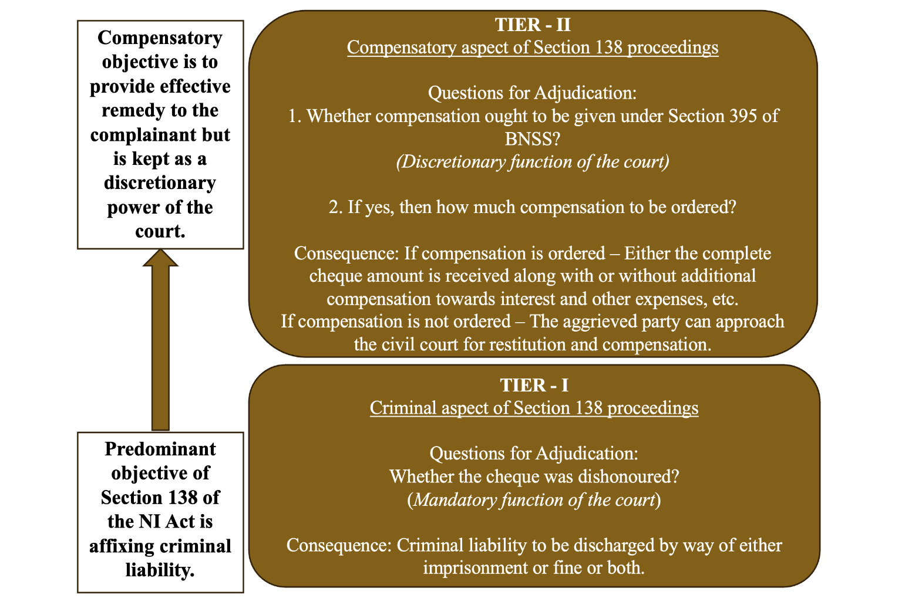
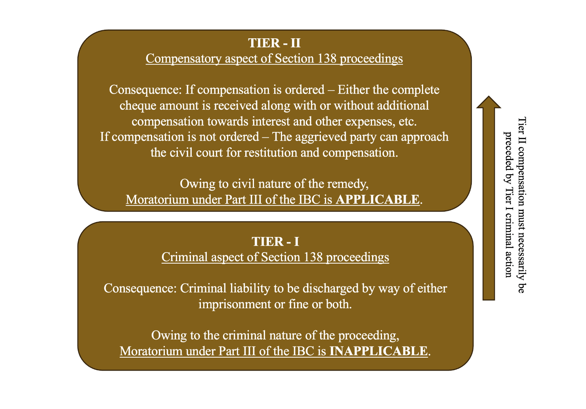

2026 INSC 579 REPORTABLE
IN THE SUPREME COURT OF INDIA
CRIMINAL APPELLATE JURISDICTION
CRIMINAL APPEAL NO. __________ OF 2026
(ARISING OUT OF SPECIAL LEAVE PETITION (CRL.) NO. 12135 OF 2024)
DINESHCHAND SURANA ...PETITIONER
Versus
UCO BANK ...RESPONDENT
WITH
CRIMINAL APPEAL NO. __________ OF 2026
(ARISING OUT OF SPECIAL LEAVE PETITION (CRL.) NO. 12136 OF 2024)
J U D G M E N T
J.B. PARDIWALA, J. For the convenience of exposition, this judgment is divided into the following parts:
• Statement of Objects and Reasons of the Banking Amendment Act, 1988..................................................................................... 33 • Stage at which the offence stands committed is different from the stage at which it is prosecuted .................................................... 35 • Difference in stages of commission and prosecution of offence acts as safeguard for bona fide persons ...................................... 37 • Minor nature of the offence ........................................................ 40
(iii) Analysis of P. Mohanraj (supra) as regards nature of Section 138 offence ..................................................................................... 43
(iv) Quasi-criminal nature of offence under Section 138 ................. 47
(v) Distinction between fine and compensation ............................... 50 • Scheme of compensation under the NI Act prior to the introduction of Chapter XVII ..................................................... 52 • Compensation order in Section 138 proceedings to be in terms of Section 395 of the BNSS ............................................................ 59
(vi) Permissibility of filing civil suit parallel to the complaint proceedings under Section 138 .................................................... 76 (vii)Whether Section 138 proceeding is a "civil sheep in a criminal wolf's clothing"? ........................................................................... 81 (viii)Discussion on the compensatory aspect of Section 138 proceedings .................................................................................... 92
II. Applicability of the Moratorium provisions under Part III of the IBC to the proceedings under Section 138 of the NI Act ................ 97
(i) Inapplicability of moratorium provisions on the criminal aspect of Section 138 proceedings ........................................................... 97
(ii) Applicability of moratorium provisions on the compensatory aspect of Section 138 proceedings ............................................. 106
III. Applicability of Moratorium provisions under Part III of the IBC on Directors vicariously liable under Section 141 of the NI Act ................................................................................................. 117
(i) Object of the Moratorium provisions under Parts II and III of the IBC ......................................................................................... 117
(ii) Pecuniary liability of compensation ordered under Section 138 of the NI Act on the Directors of the company ........................ 125
(iii) Meaning of the expression "any debt" appearing in Sections 96 and 101 of the IBC respectively ................................................. 135 E. DETERMINATION OF THE ISSUES IDENTIFIED ....................... 143 I. Whether the proceedings under Section 138 of the NI Act are in the nature of legal action for recovery of money? ......................... 143
II. Whether the proceedings under Section 138 of the NI Act are protected during the moratorium period provided under Part-III of the IBC? ......................................................................................... 146
III. Whether director(s) liable under Section 141 of the NI Act would enjoy the benefit of moratorium in respect of Section 138 proceedings, while undergoing personal insolvency? ................... 148 F. CONCLUSION ....................................................................................... 150
1. Leave granted.
2. Since the issues raised in all the captioned appeals are the same, those were taken up for hearing analogously and are being disposed of by this common judgment and order.
3. This appeal arises from the judgment and order dated 18.10.2023 passed by the High Court of Judicature at Madras, dismissing the Criminal OP SR No. 40230 of 2023 and Criminal MP No. 13854 of 2023 respectively filed by the appellant herein seeking to get the complaint quashed, which was filed by the respondent herein under Section 138 of the Negotiable Instruments Act, 1881 (the "NI Act"), essentially on the ground that the appellant was undergoing personal insolvency proceedings and that the complaint proceedings under Section 138 of the NI Act were stayed during the interim moratorium period under Section 96 of the Insolvency and Bankruptcy Code, 2016 (the "IBC").
A. FACTUAL MATRIX
4. The appellant is the former Managing Director of M/s. Surana Power Ltd. (hereinafter referred to as "SPL"), a company incorporated under the provisions of the Companies Act, 1956. The company is engaged in the business of generation, production and sale of electricity. Presently, SPL is undergoing liquidation as per the order dated 19.02.2018 passed by the National Companies Law Tribunal, Chennai.
5. It appears from the materials on record that the appellant herein availed various financial and credit facilities from the respondent bank which included the opening of Irrevocable Letters of Credit Facility on 26.12.2014 for the purchase of Indonesian Coal from M/s. Natural Coal Private Ltd. for a sum of Rs. 5,03,21,250/-. The respondent bank acceded to the appellant's request to open an Inland Letter of Credit in favour of SPL for the said purpose.
6. The appellant had to provide a blank cheque by way of security to the respondent for the issuance of the Inland Letter of Credit with an understanding that the respondent would be at liberty to encash the same if ultimately the liability of paying the sum of Rs. 5,03,21,250/- fell onto the respondent due to non-payment thereof by the appellant and SPL respectively within 90 days of the invoice raised by M/s. Natural Coal Private Limited.
7. In view of the devolvement of the Letter of Credit to SPL, the respondent became liable to pay the bills amounting to Rs. 5,03,21,250/- which were originally payable by SPL. In such circumstances, the appellant issued a cheque dated 26.03.2015 drawn on Punjab National Bank in order to clear the aforesaid dues payable to the respondent by the SPL. However, the said cheque got dishonoured on 18.06.2015 with an endorsement of "Funds Insufficient".
8. In view of the aforesaid, the respondent issued a statutory notice dated 23.06.2015 under Section 138 of the NI Act, to the SPL, the appellant and the other accused calling upon them to make good the amount in respect of which the cheque was dishonoured. After 15 days from the issuance of the statutory notice, the respondent filed the C.C. No. 3645 of 2015 before the XIV Metropolitan Magistrate, Egmore, Chennai (the "MM, Egmore").
9. On 24.10.2018, the appellant filed Criminal OP No. 24740 of 2019 before the High Court praying for quashing of the complaint filed by the respondent before the MM, Egmore. However, the High Court dismissed the petition vide its order dated 24.10.2018.
10. After about three years, the National Company Law Tribunal, Chennai (the "NCLT") vide its order dated 15.02.2022, admitted an insolvency application against the appellant under Section 95 of the IBC, during the pendency of the complaint filed before the MM, Egmore.
11. On 09.08.2023, the appellant filed Criminal OP SR No. 40230 of 2023 and Criminal MP No. 13854 of 2023 respectively before the High Court for quashing of the complaint under Section 138 of the NI Act pending before the MM, Egmore and stay of the proceedings thereunder, respectively. The appellant prayed for stay of the proceedings under Section 138 of the NI Act on the ground that as per Section 96 of the IBC, the interim moratorium would operate as regards a legal proceeding in respect of any debt.
Therefore, the proceedings under Section 138 of the NI Act would be covered by such interim moratorium.
12. The High Court vide its order dated 18.10.2023 dismissed the said applications on the premise that Section 138 of NI Act is not a proceeding for recovery of money from a debtor and thus, the moratorium under Section 96 of the IBC is not applicable. The High Court opined that Section 138 of the NI Act is a criminal enactment which provides for sentence of imprisonment and fine. Therefore, the proceedings under Section 138 of the NI Act could be said to be criminal in nature and not merely intended to be recovery proceedings against a debtor.
13. Later, on 30.08.2024, the NCLT admitted the personal insolvency application against the appellant and triggered the operation of the moratorium under Section 101 of the IBC.
14. Upon completion of the insolvency proceedings, the NCLT, on 03.01.2025, closed the matter thereby granting liberty to the appellant under Section 122 of the IBC and the creditor under Section 123 of the IBC who, in the present case, moved the insolvency application, to file a bankruptcy application. The same was preferred by the said creditor and a bankruptcy order was passed on 12.11.2025 by the NCLT. In view thereof, the moratorium under Section 128 of the IBC is currently operating qua the appellant.
B. SUBMISSIONS BY THE PARTIES a. Submissions on behalf of the appellant
15. Mr. Shreeyash Lalit, the learned counsel appearing on behalf of the appellant, addressed himself on the issue whether the proceedings for the dishonour of cheque under Sections 138 and 141 of the NI Act respectively, are covered by the moratorium provisions for personal insolvency and bankruptcy under Part-III of the IBC. In doing so, the learned counsel gave us a fair idea as regards the scheme and object of the various moratorium provisions under the IBC.
16. The learned counsel submitted that a moratorium under Part-III qua personal insolvency is distinct from a moratorium under Section 14 of the IBC which relates to corporate debtors. The moratorium provisions under Part-III apply to individuals and partnership firms and the insolvency resolution process against an individual debtor can be initiated by either the debtor himself under Section 94 of the IBC or by a creditor under Section 95. Once such an application is filed, the interim moratorium provided under Section 96 commences and ceases to have effect on the date of the admission of the application. Consequently, Section 101 of the IBC brings into effect a statutory moratorium with effect from such admission and thereby stays any pending legal action in respect of the debt. The moratorium also bars the initiation of any new action by the creditors in respect of the debt.
17. The learned counsel further submitted that Chapter-IV of Part-III contains provisions as regards the bankruptcy for individual and partnership firms.
An application for bankruptcy can be filed by a creditor or jointly with other creditors as soon as an order is passed under Section 115 of the IBC directing closure of the personal insolvency proceedings. When an application for bankruptcy is filed under Section 122 or 123 respectively by a debtor or creditor, an interim moratorium under Section 124 of the IBC is triggered with effect from the date of making of the application and ceases to have effect on the bankruptcy commencement date. Section 128(1)(c) provides for a moratorium period beginning from the passing of the bankruptcy order under Section 126 of the IBC, wherein a creditor of the bankrupt debtor shall not initiate any action against the property of such bankrupt individual in respect of his debt, nor shall he continue any suit or other legal proceedings except with the leave of the Adjudicating Authority, subject to the provisions of Section 128(2).
18. The aforesaid submissions emphasize the crucial words "in respect of any debt" used in Section 96(1)(b), Section 101(2) as well as Section 124(1)(b) and Section 128(1)(c) respectively. The expression "in respect of any debt" indicates that the moratorium which operates under Part-III of the IBC is primarily in respect of a debt rather than a debtor. Mr. Lalit invited our attention to the meaning of the words "in respect of" as discussed by this Court in P. Mohanraj v. Shah Bros. Ispat (P) Ltd., reported in (2021) 6 SCC 258 wherein it was held that the said expression accords a wide meaning to the nature of debt and would therefore, include any proceeding which relates directly or indirectly to a debt.
19. Mr. Lalit distinguished between the moratorium under Section 14 of the IBC qua the corporate debtors from the moratorium provisions under Part-III of the IBC which relates to personal insolvency. It was submitted that the moratorium under Section 14 prohibits institution of suits or continuation of pending suits or proceedings against the corporate debtor. This Court in P. Mohanraj (supra) held upon a juxtaposition of the moratorium provisions under Part-II and Part-III of the IBC respectively, that Section 14 declares a moratorium prohibiting what is mentioned in clauses (a) to (d) thereof in respect of transactions entered into by the corporate debtor. Such transactions are inclusive of those relating to debts of the corporate debtor but are not limited to the said category. This is because Section 14(1)(d) is conspicuous by the absence of the word "debts". What follows from a bare textual reading of the provisions is that where individuals or firms are concerned, the recovery of any property by an owner or lessor, where such property is occupied by or in possession of the individual or the firm, can be recovered during the moratorium period. However, the same is not true for the property of the corporate debtor due to a prohibition on fresh or pending proceedings in respect of the enlarged category of "transactions".
20. The learned counsel however, made submissions as regards the scope of the moratorium provisions under Parts II & III from one another angle by submitting that the moratorium under Sections 96 and 101 respectively of the IBC afford a far greater protection than Section 14 as the proceedings under the former are stayed in respect of any and all debt and not just the debtor.
21. Mr. Lalit further submitted that a proceeding commenced under Sections 138 and 141 of the NI Act respectively, is included within the term "legal proceedings" by virtue of the expression "in respect of" and the same has been affirmed by this Court in P. Mohanraj (supra). Though the facts germane to P. Mohanraj (supra) dealt with a moratorium under Section 14 of the IBC, yet this Court undertook an analysis of all the moratorium provisions pertaining to corporate and personal insolvency. It was held upon a comprehensive analysis of Sections 14, 96, and 101 of the IBC respectively, that a proceeding under Sections 138 and 141 of the NI Act would be covered by the moratorium provisions not only under Part-II of the IBC but also under Part-III which relates to personal insolvency.
22. The learned counsel submitted that this Court, in P. Mohanraj (supra), was conscious of the fact that the continuation of a Section 138 proceedings against the corporate debtor would be counter-productive to the objective of providing breathing space to the debtor and would result in depletion of its assets during the insolvency period which would cause difficulties in restructuring or revival of the debtor as a going concern. It was further held that there is no difference between the impact of a suit and a Section 138 proceeding and therefore, the expression "proceedings" appearing in Section 14 of the IBC cannot be confined to such proceedings or actions that are analogous to civil suits.
23. In the same breath, this Court also juxtaposed the language contained in Section 14 with other moratorium provisions under Sections 96 and 101 of the IBC respectively to hold that the expression "legal action or proceeding in respect of any debt" appearing therein also include the proceedings initiated or pending under Sections 138 and 141 of the NI Act.
24. The learned counsel placed reliance upon the observations made in P. Mohanraj (supra) as regards the language of the Section 14 and Section 85 of the IBC respectively. It was held therein that the language of Section 85 of the IBC is only in respect of debts, whereas, the moratorium contained in Section 14 is not subject specific. The expression "in respect of any debt" appears as is in the moratorium provisions provided in Sections 96 and 101 of the IBC respectively which relate to personal insolvency. Therefore, this Court has held in the most clear and unequivocal terms that the expression "legal action or proceeding in respect of any debt" would include a proceeding under Section 138 of the NI Act as the moratorium for personal insolvency matters is not limited to staying recovery of any debt but also extends to any legal proceeding that may be indirectly relatable to such recovery of debt.
25. Mr. Lalit also pointed out the unique description that this Court in P. Mohanraj (supra), expounded as regards the nature of the proceedings under Section 138 of the NI Act. The three-Judge Bench therein described Section 138 proceeding as a "civil sheep in a criminal wolf's clothing". It was said so because the nature of Section 138 proceeding is recovery of debt and the deemed offence therein relates primarily to a civil wrong. Such inference has been drawn by this Court in its decision in Vinay Devanna Nayak v. Ryot Sewa Sahakari Bank Ltd., reported in (2008) 2 SCC 305, wherein it was observed that the 2002 Amendment to the NI Act made the offence under Section 138 of the NI Act compoundable and that a stage in the evolution of the law had been reached when most of the complainants viewed such proceedings under Section 138 as one for the recovery of the cheque amount, with the punishment for the offence of dishonour becoming secondary. This Court in J.V. Baharuni v. State of Gujarat, reported in (2014) 10 SCC 494, also emphasized that the compensatory aspect of the remedy under Section 138 of the NI Act ought to be given priority over the punitive aspect. J.V. Baharuni (supra) lays down the principle that nothing remains in the cheque dishonour proceedings once the cheque amount is paid by a specified date and the courts are empowered to close the said proceedings.
26. The learned counsel referring to P. Mohanraj (supra) argued that the proceedings under Section 138 of the NI Act are "quasi-criminal" in nature and that Section 138 proceedings can be said to be a "civil sheep in a criminal wolf's clothing". This Court gave its reasoning for observing so in Paragraph 47 which reads thus:
"47. We have already seen how the language of Sections 96 and 101 would include a Sections 138/141 proceeding against a firm so that the moratorium stated therein would apply to such proceedings…..the object of Sections 14 and 96 and 101 being the same, namely, to see that during the insolvency resolution process for corporate persons/individuals and firms, the corporate body/firm/individual should be given breathing space to recuperate for a successful resolution of its debts — in the case of a corporate debtor, through a new management coming in; and in the case of individuals and firms, through resolution plans which are accepted by a committee of creditors, by which the debtor is given breathing space in which to pay back his/its debts, which would result in creditors getting more than they would in a bankruptcy proceeding against an individual or a firm."
27. The learned counsel relied on the Bombay High Court's decision in Sheetal Gupta v. National Spot Exchange Ltd., reported in 2023 SCC OnLine Bom 3095 wherein the meaning of "any debt" as appearing in Sections 96 and 101 of the IBC respectively, was discussed. It was observed that the debt incurred or likely to be incurred by an applicant, that may be passed in a proceeding under Section 138 of the NI Act was covered by the term "any debt" appearing in Section 96 of the IBC.
28. As regards the issue whether this Court's dictum in Rakesh Bhanot v. Gurdas Agro Private Limited, reported in (2025) 6 SCC 781, is in teeth of the larger Bench decision in P. Mohanraj (supra), the learned counsel submitted that though the matter was situated in a similar factual background as P. Mohanraj (supra), this Court held that allowing the parties undergoing personal insolvency to evade prosecution under Section 138 of the NI Act by invoking the moratorium provisions under Part-III of the IBC would undermine the very purpose of the NI Act. The following portions of Rakesh Bhanot (supra) were relied upon:
"21. Admittedly, the appellant-petitioners are facing trial for the offence under Sections 138/141 of the NI Act, 1881, at the instance of the respondent complainants. While so, they initiated the personal insolvency proceedings under IBC and sought exemption from Section 138 proceedings before the trial court, referring to interim moratorium provided under Section 96 IBC. It is to be noted that upon the application being admitted, the moratorium provisions under IBC offer protection only to the corporate debtor i.e. the company, and do not extend protection against civil liability to personal guarantors by specific exclusion or to any individual who is prosecuted for committing a criminal act. 22. The legislative intent behind the Insolvency and Bankruptcy Code (IBC) is to provide a structured framework for the resolution of corporate debtors' financial distress, facilitating their rehabilitation and ensuring the maximisation of asset value. The application under Section 94 or 95 would fall under Chapter III IBC.
An application under Section 94, when taken out by a debtor in the capacity of a personal guarantor of a company, to declare him/her as insolvent, is to be disposed of by following the procedures in Sections 97 to 119. The application filed under Section 94 is scrutinised by the resolution professional and a report is submitted as contemplated under Section 99 recommending either the approval or rejection of the application. The interim moratorium which commences on the presentation of the application will expire on the admission of the application by an order of the adjudicating authority under Section 100. Upon admission, the moratorium under Section 101 comes into operation. The interim moratorium under Section 96 and the moratorium under Section 101 IBC are designed to offer a breathing space to the corporate debtor, allowing them to reorganise their financial affairs without the immediate threat of creditor actions. However, this moratorium is not intended to shield individuals from personal criminal liabilities arising from their actions outside the scope of corporate debt restructuring. The respective appellant-petitioners, having filed insolvency applications as personal guarantors under Section 94 IBC, cannot extend this protection to avoid prosecution under Section 138 of the NI Act, 1881.
---xxx--- 24. On the other hand, the proceedings under Section 138 of the NI Act, 1881, pertain to the dishonour of cheques issued by the respective appellant- petitioners in their personal capacity. These proceedings are distinct from the corporate insolvency proceedings and are aimed at upholding the integrity of commercial transactions by holding individuals accountable for their personal actions.
The scope and nature of the proceedings under IBC may result in extinguishment of the actual debt by restructuring or through the process of liquidation. But such extinguishment will not absolve its Directors from the criminal liability. Section 141 of the NI Act, 1881 enables the prosecution of the persons in charge of the affairs and responsible for the conduct of the business of the company along with the company. The statutory liability against the Directors under Section 138 of the NI Act, 1881, is personal and hence, continues to bind natural persons, irrespective of any moratorium applicable to the corporate debtor.
25. The acceptance of the resolution plan under Section 31 IBC or its implementation thereof will have no effect on the prosecution under Section 138 of the NI Act, 1881.
Similarly, the acceptance of the report by the resolution professional under Section 100 and the moratorium under Section 101, which reprises Section 96, will not bar the continual of any criminal action. The cause of action for prosecution under Section 138 of NI Act commences on the dishonour of the cheque and the failure to pay the amount unpaid because of dishonour, within 15 days from the date of receipt of notice demanding payment. It is pertinent to mention here that the prosecution can be only with respect to the amount unpaid by dishonour of the cheque irrespective of the actual debt. The distinction between the right to sue based on a dishonoured cheque by initiating a civil suit and launching a prosecution under Section 138 of the Negotiable Instruments Act is significant. In case of former, the interim moratorium can operate, but not in case of latter.
26. In Mohanraj case [P. Mohanraj v. Shah Bros. Ispat (P) Ltd., (2021) 6 SCC 258 : (2021) 3 SCC (Civ) 427 : (2021) 2 SCC (Cri) 818 : (2021) 14 Comp Cas-OL 1] , the dishonoured cheques were issued by the company and hence, the complainant initiated Section 138 proceedings against the company and its Directors. The question that arose for consideration was, whether the institution or continuation of a proceeding under Sections 138/141 of the NI Act, 1881, can be said to be covered by the moratorium provision, namely, Section 14 IBC. The petitioners in the connected writ petitions therein, were the erstwhile Directors/persons in charge of and responsible for the conduct of the business of the corporate debtor and they were all premised upon the fact that Section 138 proceedings are covered by Section 14 IBC and hence, cannot continue against the corporate debtor and consequently, against the petitioners therein.
27. This Court in Mohanraj case [P. Mohanraj v. Shah Bros. Ispat (P) Ltd., (2021) 6 SCC 258 : (2021) 3 SCC (Civ) 427 : (2021) 2 SCC (Cri) 818 : (2021) 14 Comp Cas- OL 1] , after a detailed analysis of the provisions relating to moratorium under Sections 14, 96 and 101 IBC, concluded that the moratorium provision contained in Section 14 IBC would apply only to the corporate debtor, and the natural persons mentioned therein, continuing to be statutorily liable under the NI Act, 1881. In doing so, it was clarified that the moratorium under IBC does not extend to criminal proceedings. Further, it was emphasised that IBC's objective is to address the corporate debtor's financial distress and should not be misconstrued as a means to avoid personal criminal accountability.
28. For better appreciation, the relevant portion of the said judgment is extracted hereunder: (Mohanraj case [P.
Mohanraj v. Shah Bros. Ispat (P) Ltd., (2021) 6 SCC 258 : (2021) 3 SCC (Civ) 427 : (2021) 2 SCC (Cri) 818 : (2021) 14 Comp Cas-OL 1] , SCC p. 351, para 102) "102. Since the corporate debtor would be covered by the moratorium provision contained in Section 14 IBC, by which continuation of Sections 138/141 proceedings against the corporate debtor and initiation of Sections 138/141 proceedings against the said debtor during the corporate insolvency resolution process are interdicted, what is stated in paras 51 and 59 in Aneeta Hada [Aneeta Hada v. Godfather Travels & Tours (P) Ltd., (2012) 5 SCC 661 : (2012) 3 SCC (Civ) 350 : (2012) 3 SCC (Cri) 241 : (2012) 172 Comp Cas 75] would then become applicable. The legal impediment contained in Section 14 IBC would make it impossible for such proceeding to continue or be instituted against the corporate debtor. Thus, for the period of moratorium, since no Sections 138/141 proceeding can continue or be initiated against the corporate debtor because of a statutory bar, such proceedings can be initiated or continued against the persons mentioned in Sections 141(1) and (2) of the Negotiable Instruments Act. This being the case, it is clear that the moratorium provision contained in Section 14 IBC would apply only to the corporate debtor, the natural persons mentioned in Section 141 continuing to be statutorily liable under Chapter XVII of the Negotiable Instruments Act."
---xxx--- 31. For the foregoing discussion, we are of the opinion that the object of moratorium or for that purpose, the provision enabling the debtor to approach the Tribunal under Section 94 is not to stall the criminal prosecution, but to only postpone any civil actions to recover any debt. The deterrent effect of Section 138 is critical to maintain the trust in the use of negotiable instruments like cheques in business dealings. Criminal liability for dishonouring cheques ensures that individuals who engage in commercial transactions are held accountable for their actions, however subject to satisfaction of other conditions in the NI Act, 1881. Therefore, allowing the respective appellant-petitioners to evade prosecution under Section 138 by invoking the moratorium would undermine the very purpose of the NI Act, 1881, which is to preserve the integrity and credibility of commercial transactions and the personal responsibility persists, regardless of the insolvency proceedings and its outcome."
29. Mr. Lalit submitted that the judgment delivered in Rakesh Bhanot (supra) is in teeth of the three-Judge Bench decision of this Court in P. Mohanraj (supra), as it had no occasion to consider the observations made in P. Mohanraj (supra) as regards the applicability of the moratorium provisions in cases of personal insolvency to proceedings under Section 138. The learned counsel made his submissions on the strength of the reasoning that the objective desired to be achieved by the moratorium provisions in Part-II and Part-III of the IBC respectively was the same, i.e., to ensure that there is no depletion of assets of the corporate/individual debtor so as to provide breathing space and opportunity to resolve the financial distress. Therefore, the reasoning as to the applicability of moratorium provisions to the proceedings under Section 138 of the NI Act, in context of corporate insolvency, served as the position of law as regards the applicability of moratorium provisions in the context of personal insolvency as well.
30. The learned counsel also canvassed submissions on the observation of this Court in P. Mohanraj (supra) that in a scenario where the benefit of moratorium is extended to a corporate debtor under Section 14 of the IBC and the proceedings under Section 138 of the NI Act are stayed, such stay would operate only in respect of the corporate debtor. It was clarified that the Section 138 proceedings shall continue against the Directors and other persons vicariously liable under Section 141 of the NI Act, as the language of Section 14 provided for moratorium only in respect of suits or proceedings against the corporate debtor.
31. This Court in Ajay Kumar Radheshyam Goenka v. Tourism Finance Corporation of India Ltd., reported in (2023) 10 SCC 545 reaffirmed the position of law in this regard and held that in light of approval of the resolution plan under Section 31 of the IBC, it is only the corporate debtor that is afforded the relief of being discharged from criminal liability arising from the proceedings under Section 138 of the NI Act by virtue of Section 32A of the IBC. However, such protection does not extend to natural persons, who are vicariously liable under Section 141 of the NI Act and are themselves not undergoing personal insolvency. The learned counsel submitted that this Court in Ajay Kumar Radheshyam Goenka (supra) had no occasion to clarify the law in a scenario where the individual directors were also undergoing personal insolvency under Part-III as the conspectus of facts therein did not raise the said issue.
32. Mr. Lalit proceeded to provide assistance as regards the true import of the judgment delivered in P. Mohanraj (supra). He submitted that once personal insolvency is admitted against the persons vicariously liable under Section 141 of the NI Act, they are entitled to the protection of moratorium under Sections 96 and 101 of the IBC respectively and the proceedings under Section 138 of the NI Act cannot be allowed to continue during the moratorium period.
33. It was submitted that the object behind such protection is to give breathing space to the individual debtor as well as ensuring that the creditors do not get more than they would be entitled to in a bankruptcy proceeding. Once the creditors have been paid their debts, the individual debtor cannot be saddled with further criminal liability under Section 138 of the NI Act.
34. In light of the aforesaid averments, the learned counsel prayed that the Section 138 proceedings against the appellant ought to be stayed in view of the bankruptcy order dated 12.11.2025 passed by the NCLT as the said order prohibits the continuation of any suits or other proceedings.
35. Mr Lalit also gave us a fair idea of the moratorium provisions under the relevant provisions of the IBC. He submitted that akin to the twin steps under Chapters II and III of Part II of the IBC, namely insolvency and subsequent liquidation respectively, of a corporate debtor, there are twin steps provided under Chapters III and IV of Part III of the IBC, namely, insolvency and subsequent bankruptcy, of an individual or a partnership firm, respectively.
It was submitted that the object of the moratorium is the same whether it be under (a) corporate debtor insolvency under Section 14 of the IBC, (b) corporate debtor liquidation under Section 33 of the IBC, (c) personal insolvency under Sections 96 and 101 of the IBC, and (d) bankruptcy of individuals or firms under Sections 124 and 128 of the IBC.
36. The learned counsel canvassed the argument that once a proceeding under Section 138 of the NI Act stands covered under both corporate insolvency under Section 14 of the IBC as well as corporate debtor liquidation under Section 33 of the IBC, then there is no reason why it should not be covered by the moratorium provisions for personal insolvency under Sections 96 and 101 of the IBC respectively as well as bankruptcy proceedings under Sections 124 and 128 of the IBC respectively.
37. In the last, Mr. Lalit submitted that the law does not envisage a permanent moratorium qua the proceedings under Section 138 of the NI Act. The object of the moratorium provisions under Chapter IV of Part III of the IBC is only to stay such direct or indirect recovery actions, including proceedings under Section 138 of the NI Act, which may stultify the process of distribution of the estate of the bankrupt.
b. Submissions on behalf of the respondent bank
38. Mr. Briijesh Kumar Tamber, the learned counsel appearing on behalf of the respondent bank, submitted that the present petition by the appellant is liable to be dismissed in light of the judgment of this Court in Ajay Kumar Radheyshyam Goenka v. Tourism Finance Corporation of India, reported in (2023) 10 SCC 545, wherein after considering P. Mohanraj (supra), it was held that the signatories of a dishonoured cheque are subject to proceedings under Section 138 of the NI Act irrespective of whether the corporate debtor in respect of whose liability the cheque was issued, is undergoing insolvency or liquidation.
39. The learned counsel also relied upon the decision of this Court in Anjali Rathi v. Today Homes & Infrastructure (P) Ltd., reported in (2021) SCC OnLine SC 729, wherein it was held that the moratorium would apply only in relation to the corporate debtor/borrower and not against other persons.
The following portions of the said judgment were relied upon.
"15. At this juncture, we must however clarify the right of the petitioners to move against the promoters of the first respondent corporate debtor, even though a moratorium has been declared under Section 14 IBC. In the judgment in P. Mohanraj v. Shah Bros. Ispat (P) Ltd. [P.
Mohanraj v. Shah Bros. Ispat (P) Ltd., (2021) 6 SCC 258 : (2021) 3 SCC (Civ) 427 : (2021) 2 SCC (Cri) 818] , a three-Judge Bench of this Court held that proceedings under Sections 138 and 141 of the Negotiable Instruments Act, 1881 against the corporate debtor would be covered by the moratorium provision under Section 14 IBC.
However, it clarified that the moratorium was only in relation to the corporate debtor (as highlighted above) and not in respect of the Directors/management of the corporate debtor, against whom proceedings could continue. Speaking through Rohinton F. Nariman, J., the Court held : (SCC p. 351, para 102) "102. Since the corporate debtor would be covered by the moratorium provision contained in Section 14 IBC, by which continuation of Sections 138/141 proceedings against the corporate debtor and initiation of Sections 138/141 proceedings against the said debtor during the corporate insolvency resolution process are interdicted, what is stated in paras 51 and 59 in Aneeta Hada [Aneeta Hada v. Godfather Travels & Tours (P) Ltd., (2012) 5 SCC 661 : (2012) 3 SCC (Civ) 350 :
(2012) 3 SCC (Cri) 241] would then become applicable.
The legal impediment contained in Section 14 IBC would make it impossible for such proceeding to continue or be instituted against the corporate debtor. Thus, for the period of moratorium, since no Sections 138/141 proceedings can continue or be initiated against the corporate debtor because of a statutory bar, such proceedings can be initiated or continued against the persons mentioned in Sections 141(1) and (2) of the Negotiable Instruments Act. This being the case, it is clear that the moratorium provision contained in Section 14 IBC would apply only to the corporate debtor, the natural persons mentioned in Section 141 continuing to be statutorily liable under Chapter XVII of the Negotiable Instruments Act."
We thus clarify that the petitioners would not be prevented by the moratorium under Section 14 IBC from initiating proceedings against the promoters of the first respondent corporate debtor in relation to honouring the settlements reached before this Court. However, as indicated earlier, this Court cannot issue such a direction relying on a Resolution Plan which is still pending approval before an adjudicating authority."
40. Mr. Tamber submitted that the moratorium under Section 96 of the IBC is inapplicable to proceedings under Section 138 of the NI Act filed against a natural person in respect of criminal liability under the said Act. To buttress this contention, reliance was placed upon the decision of the Delhi High Court in Sandeep Gupta v. Shri Ram Steel Traders., reported in 2023 SCC OnLine Del 2786, wherein, relying upon P. Mohanraj (supra), it was held that only the liability of the company, and not the personal penal liability of the accused person, is covered under Section 141 of the NI Act. Therefore, only the company is protected, and the signatories/directors cannot escape liability by filing insolvency proceedings. Reliance was also placed on a similar view taken by the High Court of Madhya Pradesh at Jabalpur in Anurodh Mittal v. Rehat Trading Co., reported in 2024 SCC OnLine MP 7869.
41. Reliance was also placed upon the decision of the Punjab and Haryana High Court in Jitender Singh Sodhi v. CIT, reported in 2024 SCC OnLine P&H 14106, wherein it was held that proceedings under the NI Act are not in respect of any debt, but are penal in nature, attracting imprisonment and fine.
Such proceedings are therefore not covered by the expression "any debt" under Section 96 of the IBC, and consequently, directors/signatories cannot escape their liability under Sections 138 and 141 of the NI Act. Similar views were taken by the Court in Charanbir Singh Sethi v. Pooja Sharma, reported in 2023 SCC OnLine P&H 7143 and Shiva Shakti Grains (India)
(P) Ltd. v. Kaur Chand Munish Kumar, reported in 2024 SCC OnLine P&H 3404.
42. It was submitted that vicarious liability under Section 141 of the NI Act is incurred not on account of the debt owed, but on account of the willful and negligent conduct involved in the issuance of the negotiable instrument. The principal requirement for the offence under Section 141 is the misrepresentation on the part of the issuer, as is evident from the provisions of Section 141(2). It was submitted that in the present case, the accused was prosecuted under Sections 138 and 141 of the NI Act not on account of the debt owed, but on account of his fraudulent and negligent conduct attracting liability under the said provisions.
43. Mr. Tamber further submitted that Sections 14, 96, and 101 of the IBC respectively, are limited to the entity or person whose debts are undergoing restructuring and resolution. These moratorium provisions are not applicable to criminal liability incurred out of such debt. Therefore, the moratorium provisions under the IBC do not impede criminal proceedings under Section 138 of the NI Act, the Bhartiya Nyaya Sanhita, the Prevention of Money Laundering Act, and other similar penal statutes.
44. In the last, it was submitted that it is a settled position of law that the moratorium under Section 96 of the IBC is not applicable to proceedings under Section 138 read with Section 141 of the NI Act where such proceedings arise out of intentional and fraudulent conduct. In the present case, the petitioner failed to honour the cheque tendered despite giving the assurance that it would be honoured upon presentation. Such conduct constitutes a criminal offence and is not covered under Section 96 and 101 of the IBC respectively as the said provisions apply only to civil debt liability. Therefore, the impugned judgment of the High Court does not suffer from any infirmity since the law on the subject is well settled. Hence, the present petition was liable to be dismissed.
C. ISSUES FOR DETERMINATION
45. Having heard the learned counsel appearing for the parties and having gone through the materials on record, the following questions fall for our consideration:
i. Whether the proceedings under Section 138 of the NI Act are initiated with the object to recover the money from the debtor?
ii. Whether the proceedings under Section 138 of the NI Act are protected during the moratorium period provided under Part-III of the IBC, i.e., under Sections 96 and 101 respectively during the insolvency proceedings as well as Sections 124 and 128 respectively during the bankruptcy proceedings?
iii. Whether the proceedings under Section 138 of the NI Act against the individual directors and other persons vicariously liable under Sections 141 of the NI Act for the actions of the corporate debtor would benefit from the moratorium provisions in Part-III of the IBC in cases of personal insolvency or bankruptcy?
D. ANALYSIS
46. Before adverting to the conspectus of facts before us, we must address ourselves on the nature of the proceeding instituted under Section 138 of the NI Act and the object that is sought to be achieved therefrom.
47. Section 138 reads thus:
"138. Dishonour of cheque for insufficiency, etc. of funds in the account.– Where any cheque drawn by a person on an account maintained by him with a banker for payment of any amount of money to another person from out of that account for the discharge, in whole or in part, of any debt or other liability, is returned by the bank unpaid, either because of the amount of money standing to the credit of that account is insufficient to honour the cheque or that it exceeds the amount arranged to be paid from that account by an agreement made with that bank, such person shall be deemed to have committed an offence and shall, without prejudice to any other provision of this Act, be punished with imprisonment for a term which may be extended to two years', or with fine which may extend to twice the amount of the cheque, or with both:
Provided that nothing contained in this section shall apply unless—
(a) the cheque has been presented to the bank within a period of six months from the date on which it is drawn or within the period of its validity, whichever is earlier;
(b) the payee or the holder in due course of the cheque, as the case may be, makes a demand for the payment of the said amount of money by giving a notice; in writing, to the drawer of the cheque, within thirty days of the receipt of information by him from the bank regarding the return of the cheque as unpaid; and (c) the drawer of such cheque fails to make the payment of the said amount of money to the payee or, as the case may be, to the holder in due course of the cheque, within fifteen days of the receipt of the said notice.
Explanation.—For the purposes of this section, "debt or other liability" means a legally enforceable debt or other liability."
I. Criminal nature of Section 138 of the NI Act
(i) Effect of "deeming fiction" in Section 138 of the NI Act
48. A bare textual reading of Section 138 indicates that when a legally enforceable debt is sought to be discharged by way of a cheque, then the dishonour of such cheque is deemed to be an offence and has been made punishable with imprisonment, fine or both. The word "deemed" holds some significance in the scheme of the provision for the reason that it gives rise to a legal fiction. The deeming provision indicates that the nature of the proceedings under Section 138 per se is civil as it arises from a transaction of a civil nature. Therefore, had it not been for the legislation of the deeming fiction by way of Section 138, the dishonour of cheque could not have constituted a criminal offence.
49. At the outset, we may refer to few decisions of this Court wherein the purpose and effect of deeming fiction has been discussed before we expound further on other aspects of this matter. In Bhavnagar University v. Palitana Sugar Mill (P) Ltd. And Others, reported in (2003) 2 SCC 111, this Court observed that the purpose and object of creating a legal fiction in a statute is well known, and once such a fiction is created, it must be given its full effect.
This Court further observed that when the law requires an imaginary state of affairs to be treated as real, the court must also treat as real the consequences and incidents which would inevitably have flowed from such a state of affairs. The relevant observations are as under:
"33. The purpose and object of creating a legal fiction in the statute is well known. When a legal fiction is created, it must be given its full effect. In East End Dwellings Co. Ltd. v. Finsbury Borough Council (1951) 2 All ER 587, 1952 AC 109 (HL) Lord Asquith, J. stated the law in the following terms: (All ER p. 599 B-D)144 "If you are bidden to treat an imaginary state of affairs as real, you must surely, unless prohibited from doing so, also imagine as real the consequences and incidents which, if the putative state of affairs had in fact existed, must inevitably have flowed from or accompanied it."" (Emphasis supplied)
50. In Anuj Jain, Interim Resolution Professional v. Axis Bank Ltd., reported in (2020) 8 SCC 401, this Court had observed that although the word "deemed" is used in different contexts, yet its essential function is to treat what may not exist in reality as if it exists in law. It was held that once the statutory conditions of a deeming provision are satisfied, the legal fiction comes into operation, and the subject-matter must then be regarded as possessing that legal character, irrespective of the actual intention or factual position, with all attendant consequences following therefrom. The relevant observations are as under:
"9.3. On a conspectus of the principles so enunciated, it is clear that although the word 'deemed' is employed for different purposes in different contexts but one of its principal purpose, in essence, is to deem what may or may not be in reality, thereby requiring the subject-matter to be treated as if real. Applying the principles to the provision at hand i.e., Section 43 of the Code, it could reasonably be concluded that any transaction that answers to the descriptions contained in sub-sections (4) and (2) is presumed to be a preferential transaction at a relevant time, even though it may not be so in reality. In other words, since sub-sections (4) and (2) are deeming provisions, upon existence of the ingredients stated therein, the legal fiction would come into play; and such transaction entered into by a corporate debtor would be regarded as preferential transaction with the attendant consequences as per Section 44 of the Code, irrespective whether the transaction was in fact intended or even anticipated to be so."
(Emphasis supplied)
51. The discussion as regards the effect of a deeming fiction gains significance in light of the civil origin of the proceeding under Section 138. There is no gainsaying that issues in relation to the existence of a legally enforceable debt and whether the amount of the cheque was payable or not, are inherently civil questions. Section 138 of the NI Act is attracted only when the mode of payment is a cheque and such cheque is dishonoured by the payer. This is because the deeming fiction makes the dishonour of cheque an offence that saddles an accused with criminal consequences, even though such dishonour may not ordinarily attract criminal liability.
52. The dictum of this Court in Bhavnagar University (supra) is clear in its exposition that a deeming fiction and the artificial consequences that it intends must be treated as real. Therefore, we have no qualms in observing that though Section 138 of the NI Act is based on a civil dispute as regards repayment of debt, yet, it cannot be treated on par with a civil proceeding for recovery of money. The deeming fiction makes its sufficiently clear that the provision is punitive and makes the act of dishonouring a cheque a criminal offence.
(ii) Objective of the enactment of Section 138 of the NI Act and nature of the offence made out therein • Statement of Objects and Reasons of the Banking Amendment Act, 1988
53. The objective underlying the deemed offence under Section 138 of the NI Act is apparent from the Statement of Objects and Reasons appended to the Banking, Public Financial Institutions and Negotiable Instruments Laws (Amendment) Act, 1988 ("Banking Amendment Act") whereby Sections 138 to 142 were inserted in the NI Act. The relevant portion of the prefatory note to the said Amendment Act reads thus:
"Prefatory Note—Statement of Objects and Reasons.—
The Banking laws were last amended through the Banking Laws (Amendment) Act, 1985 (81 of 1985), the various provisions of which were brought into force on different dates in 1985 and 1986. Since then, in the course of administering various laws relating to banks and public financial institutions, a need has arisen for some further amendments to the Negotiable Instruments Act, 1881, the Reserve Bank of India Act, 1934, the Banking Regulation Act, 1949, the State Bank of India Act, 1955, the State Bank of India (Subsidiary Banks) Act, 1959, the Deposit Insurance and Credit Guarantee Corporation Act, 1661, the Industrial Development Bank of India Act, 1964, the Banking Companies (Acquisition and Transfer of Undertakings) Act, 1970, the Regional Rural Banks Act, 1976, the Banking Companies (Acquisition and Transfer of Undertakings) Act, 1980, the Export-Import Bank of India Act, 1981, the National Bank for Agriculture and Rural Development Act, 1981 and the Industrial Reconstruction Bank of India Act, 1984, to achieve the following objectives:
(…) (xi) to enhance the acceptability of cheques in settlement of liabilities by making the drawer liable for penalties in case of bouncing of cheques due to insufficiency of funds in the accounts or for the reason that it exceeds the arrangements made by the drawer, with adequate safeguards to prevent harassment of honest drawers. (…)"
(Emphasis supplied)
54. What is discernible from the aforesaid is that criminal consequences are attached not to the failure to repay the debt but rather, to the dishonour of the cheque by way of which such debt is sought to be discharged. In our considered view, there can be no other understanding. We say so because had the Parliament's intention been to punish the failure to discharge the debt, then the punitive measures provided under Section 138 ought to have been made applicable to the dishonour of all kinds of negotiable instruments and not restricted to cheque bounce. The Parliament thought fit to provide for criminal consequences in cases of dishonour of cheques so as to achieve the objective of deterring people from dishonouring cheques and increase the faith of the public in its usage for settling debts.
• Stage at which the offence stands committed is different from the stage at which it is prosecuted
55. A plain reading of both Section 138 of the NI Act as well as the Statement of Objects and Reasons appended to the Banking Amendment Act, 1988 indicates that the Legislature made the dishonour of the mode of payment, i.e., dishonour of cheque, an offence, and not the failure to pay the cheque amount which is the injury caused due to the dishonour of the mode of payment. This position of law is limpid from the exposition of this Court in Dashrath Rupsingh Rathod v. State of Maharashtra, reported in (2014) 9 SCC 129 and Jai Balaji Industries Ltd. v. Heg Ltd., reported in 2025 SCC OnLine SC 2581 (wherein one of us, J.B. Pardiwala, J., was a part).
56. It was observed by this Court in Dashrath Rupsingh (supra) and Jai Balaji (supra) respectively that there are five concomitants that give rise to the prosecution of the offence made out under Section 138, namely, a) Drawing of the cheque, b) Presentation of the cheque to the bank, c) Returning the cheque unpaid by the bank, d) Issuing notice in writing to the drawer of the cheque demanding payment of the cheque amount, e) Failure of the drawer to make payment within 15 days of the receipt of the notice.
57. It was held therein that though it is necessary that the aforesaid five concomitants of Section 138 be completed before a proceeding under Section 138 could be instituted and prosecuted, yet it cannot be said that the offence does not come to be committed till these five conditions are met.
Therefore, it is trite law that the offence under Section 138 of the NI Act is committed the moment the cheque is dishonoured and returned unpaid by the bank.
• Difference in stages of commission and prosecution of offence acts as safeguard for bona fide persons
58. Having gone through the position as regards the stage at which the offence comes to be committed under Section 138, we find it apposite to address ourselves on the two concomitants of (i) issuance of the statutory notice by the payee and (ii) the failure of the drawer to make payment within 15 days of the receipt of the notice. Though these two factors are not the ingredients for the commission of the offence of dishonour, yet they are crucial conditions for the same to be actually tried before the courts. In our view, the reason for the inclusion of these conditions as a requisite precursor to the prosecution of the offence is to safeguard bona fide drawers of cheques against the standard of strict liability.
59. The legislature recognized that strict liability imposed under Section 138 may cause undue harassment to such drawers who may intend to discharge their debt but are unable to do so via a cheque due to temporary shortage of funds or unmanageable default in the cheque clearing system. It is for this reason that additional conditions apart from the commission of the offence, are required to be met for under Section 138.
60. It is incumbent upon the complainant to send a statutory legal notice to demand the amount for which the cheque was drawn. This is because the scheme of the NI Act as a whole presumes that if no communication regarding dishonour of a negotiable instrument is provided, then the same must have been honoured. It is only once the dishonour of cheque is communicated and when the drawer fails to repay the cheque amount within fifteen days from receipt of the statutory notice, that the prosecution of the offence of dishonour of cheque may commence.
61. We find it necessary to understand the nature of the safeguard provided under clause (c) of Section 138. To do so, we may place some emphasis on the opening language of the proviso – "Provided that nothing contained in this section shall apply unless– (…)". What is discernible from the aforesaid is that Section 138 becomes automatically applicable at the time the cheque is dishonoured and returned unpaid. However, the statute places certain responsibilities on both the payer and payee of the cheque and if such obligations are not fulfilled, the applicability of the Section 138 stands expunged. These responsibilities are as follow:
(a) The payee must present the cheque to the bank within a period of six months from the date on which it was drawn or within its validity period;
(b) the payee must make a demand for the payment of the cheque amount by issuing a statutory notice in writing within thirty days from the receipt of the information that the cheque was dishonoured; and (c) the payer/drawer of the cheque ought to make payment of the cheque amount within fifteen days from the receipt of the statutory notice.
62. In the event any of the aforesaid responsibilities are omitted by the payee or the payer respectively, the proviso to Section 138 is triggered and the offence made out thereunder becomes a non-prosecutable offence. However, could it be said that the offence itself is not committed if the conditions under clauses (a) to (c) of Section 138 are not met? In our view, the answer to the same must be an emphatic 'No'.
63. We say so because even though the consequence is failure to repay the debt which gives rise to a civil dispute, yet the offence itself is relatable only to the mode of payment adopted, i.e., dishonour of the cheque. In other words, the debt to the extent of the cheque amount, not being discharged, is the injury that is caused to a payee due to the drawer's act of dishonouring the cheque. What follows from this understanding of Section 138 is that the issuance of the statutory notice under clause (b) of Section 138 is the first expression of a dispute as regards the "injury" that has been caused due to the non-payment of the cheque amount in pursuance of discharge of a legally enforceable debt.
64. In our considered opinion, the clauses (b) and (c) of Section 138 respectively provide for an opportunity to the payer/drawer of the cheque to remedy the injury, i.e., the non-payment of the cheque amount, caused due to the dishonour of the cheque. In a situation where a bona fide drawer repays the cheque amount, the injury caused by the dishonour of the cheque is put right, and the statute mandates that the commission of the offence not be prosecuted. This cannot be taken to mean that the offence would be deemed to have never been committed. It is only the criminal consequences of the commission of such offence that is omitted in light of repayment.
65. This, in our opinion, is a clear indicator that the offence of cheque dishonour is considered to be a minor offence considering that it does not affect the public at large. It is for this reason that the statute provides opportunity to accused persons to completely mitigate the criminal liability under Section 138 by remedying the injury caused by the commission of the offence.
• Minor nature of the offence
66. For the sake of conceptual clarity, we may even refer to the discharge of debt by the drawer under clause (c) of Section 138 as a process similar to the pre-prosecution compounding of offence. We say so because the prosecution of the offence and the consequences thereof are offset by the drawer by restoring the victim to the position that would exist had the offence of dishonour not been committed.
67. However, we are conscious of the fact that clause (c) of Section 138 cannot be treated on par with composition since no power to consent is vested in the victim at this stage and the liability of the drawer is statutorily discharged. We may clarify with a view to obviate any confusion, that we are referring to the composition of offence at this stage to highlight the nature of the said offence and identify the underlying logic for the provision of safeguards under clauses (b) and (c) of Section 138.
68. In our opinion, the rationale behind inclusion of clause (c) in Section 138 is based on principles similar to the ones that govern the law of composition of offences. For criminal offences, the provisions as regards compounding is contained in Section 359 of the Bhartiya Nyaya Suraksha Sanhita, 2023 (the "BNSS") (the erstwhile Section 320 of the Code of Criminal Procedure, 1973 ("CrPC")), though only for the specific offences mentioned therein.
69. We may refer to the 154th Report of the Law Commission wherein the reasoning for the enactment of Section 320 has been explained. The relevant portion of the report reads thus:
"1. The Code of Criminal Procedure in S. 320 contains detailed provisions for compounding of offences. Sub-s. (1) of S. 320 lists 21 offences under the Indian Penal Code which may be compounded by the specified aggrieved party without the permission of the court and sub-s. (2) lists 36 other offences under the Indian Penal Code which also may be compounded but only after securing the permission of the court. Under the scheme of S. 320, namely sub-s. (9), offences other than those specified in sub-ss. (1) and (2) are not compoundable.
2. The rationale for compounding of offences is that the chastened attitude of the accused and the praiseworthy attitude of the complainant in order to restore peace and harmony in society, must be given effect to in the composition of offences.
3.1. The Law commission in its 41st Report on the Code of Criminal Procedure, 1969 had not agreed to the formulation of a general rule for compounding by relating compoundable offences to the punishment provided for the offence. The Commission felt that it was "better to have clear and specific provisions such as those contained in S. 345 (of the old Code) than a general rule which is likely to lead to different interpretations ---xxx--- 9. We recommend that as a matter of policy more offences be brought under the category of offences compoundable by the parties themselves without the intervention of the court. However, offences against the public at large, howsoever small they may be, should not be compoundable."
(Emphasis supplied)
70. What is discernible from the aforesaid is that in some circumstances, the courts and the legislature allow certain offences to be compounded by private individuals depending upon the willingness and consent of the victim. The reason as to why some offences are compoundable and others are not, depends on two considerations: (i) the public interest; and (ii) the seriousness of the offence.
71. It is as clear as a noon day that composition is permitted in cases where the injured party or victim might recover damages in an action. However, when the offence is of such a nature that the society at large is aggrieved, i.e., the offence is of a public nature, no agreement that results in stifling the prosecution for such offence can be held to be valid. A perusal of the tables described in sub-sections (1) and (2) of Section 359 of the BNSS, suggests that the offences that are statutorily prescribed as being compoundable are prima facie, private in nature. Therefore, the composition of such offences would ordinarily not be against the public interest. The prerequisite for considering an offence "private" is that it be considered "minor", i.e., the nature of the offence is not serious and grave enough to imperil law and order.
72. The offence of dishonour of cheque under Section 138 of the NI Act fulfils the aforesaid requirements. This is evident from the insertion of Section 147 in the NI Act by way of the Negotiable Instruments (Amendment and Miscellaneous Provisions) Act, 2002. The said section provides for the composition of all offences under the NI Act.
(iii) Analysis of P. Mohanraj (supra) as regards nature of Section 138 offence
73. At this stage of our exposition, we may refer to the judgment in P. Mohanraj (supra) wherein it was observed that Section 138 is a hybrid provision that attaches criminal liability to a civil dispute to enforce payment under a bounced cheque if it is otherwise enforceable in law. In making this observation, this Court highlighted the following aspects of the liability under Section 138:
a) The offence under Section 138 arises only in respect of a legally enforceable debt or other liability, therefore, a debt or liability that is barred by the operation of limitation or judgment in a civil suit would be outside the scope of the said section. Further, the presumption that the complaint filed is in respect of a legally enforceable debt is rebuttable by adducing evidence which is adjudged on the principle of preponderance of probability and not on the principle of proof beyond reasonable doubt, as in the case of criminal offences.
b) Section 138 provides for the punishment of fine extending up to twice the amount of the cheque that is payable as compensation to the aggrieved party shows that the provision leans heavily towards civil nature of proceedings.
c) A period of 15 days is provided to the drawer of the cheque to discharge his liability before the offence becomes prosecutable. This indicates that the real object of the provision is to compensate the victim rather than penalise the offence.
d) The offence made out under Section 138 is a strict liability offence and the requirement of mens rea is not an ingredient.
e) As regards the jurisdiction in which the trial of Section 138 proceedings ought to take place, it was observed that Section 142 of the NI Act makes a departure from the principle of territorial jurisdiction which is ordinarily used for determining where trial would take place for criminal offences.
f) Further, the requirement that the complaint must be filed not immediately after the offence of dishonour is committed but after the lapse of the aforesaid 15 days period indicates the hybrid nature of Section 138 proceedings. This is because such a requirement introduces the concept of "cause of action" which has been expressly provided in Section 142(1)(b). It was observed that the expression "cause of action" is a foreigner to criminal jurisprudence and would apply only in civil actions to recover money.
g) As regards the mode of service of summons, it was pointed out that Section 144 of the NI Act provides for a method that is adopted for service of summons in civil cases which is another departure from the ordinary criminal procedure provided in the CrPC (now BNSS).
h) Likewise, under Section 145 of the NI Act, the evidence to be provided by the complainant is supposed to be given on affidavit, which is similar to the procedure adopted in civil proceedings.
i) Section 147 of the NI Act also makes the offence of dishonour compoundable without any intervention of the court.
j) In the last, it was observed that the hybrid nature of the provisions contained in Sections 138 to 147 is more inclined towards civil proceedings by virtue of the addition of Sections 143-A and 148.
Section 143-A empowers the courts to direct interim compensation during the pendency of the proceedings under Section 138. Similarly, Section 148 empowers appellate courts to order payment pending appeal against conviction. This Court observed that the power to direct compensation to the complainant indicates that the objective of Section 138 is to recover the amount of money for which the cheque was drawn.
74. On the basis of the aforesaid exposition, the three-Judge Bench in P. Mohanraj (supra) held that the proceedings under Section 138 can be said to be a "civil sheep in a criminal wolf's clothing" as it is the interest of the victim that is sought to be protected and the larger interest of the State is subsumed in the victim alone moving a court in cheque bouncing cases.
75. In our view, while the three-judge Bench of this Court focused on the civil aspects of Chapter VII of the NI Act, the attention of this Court in P. Mohanraj (supra) was not drawn to the predominantly criminal aspects thereof, which are discussed in the aforesaid parts of this exposition.
Therefore, we find it apposite to look into the observations made in P. Mohanraj (supra) regarding the nature of Section 138 before we proceed further on the aspect of its inter-linkage with the moratorium provisions under the IBC.
(iv) Quasi-criminal nature of offence under Section 138
76. This Court has recognized the quasi-criminal nature of Section 138 of the NI Act in several decisions. In M. Abbas Haji v. T.N. Channakeshava, reported in (2019) 9 SCC 606, it was observed that due to the quasi-criminal nature of the offence under Section 138, the principles which apply ordinarily to acquittal in criminal cases cannot apply to the offence of cheque dishonour. The relevant portion of the judgment is reproduced hereinbelow:
"6. It is urged before us that the High Court overstepped the limits which the appellate court is bound by criminal cases setting aside an order of acquittal. Proceedings under Section 138 of the Act are quasi-criminal proceedings. The principles which apply to acquittal in other criminal cases, cannot apply to these cases. (…)"
(Emphasis supplied)
77. Similarly in H.N. Jagadeesh v. R. Rajeshwari, reported in (2019) 16 SCC 730, this Court observed about the quasi-criminal nature of the offence of cheque dishonour. The relevant portion of the judgment is reproduced below:
"7. The learned counsel for the respondent has submitted that in order to advance the cause of justice, such an approach is permissible and for this purpose he has relied upon the judgment of this Court in Zahira Habibullah H. Sheikh v. State of Gujarat [Zahira Habibullah H. Sheikh v. State of Gujarat, (2004) 4 SCC 158 : 2004 SCC (Cri) 999].
We are afraid that the ratio of the aforesaid judgment cannot be extended to the facts of this case, particularly when we find that the present case is a complaint case filed by the respondent under Section 138 of the Act and where the proceedings are also of quasi-criminal nature."
(Emphasis supplied)
78. There is no gainsaying that the dishonour of cheque is functionally a civil wrong, in the sense that it causes harm to an individual or an entity instead of the society at large. Therefore, the aim of any litigation in respect of such a wrong ought to be restricted to payment of compensation for the injury caused and there need not be a punitive measure in place considering the morally-neutral territory in which civil wrongs exist.
79. However, in some cases such as cheque dishonour, contempt, etc., the legislature has thought it fit to regard such wrongs as offences so as to signal social disapproval for the same by according them a criminal status. The motivation behind characterizing private civil offences as criminal offences (especially Section 138 of the NI Act) is to ensure greater care in commercial endeavours. The doctrine of quasi-criminal offences rests largely on such rationale, rather than justifications of moral principles. In our opinion, quasi- criminal offences, are the clearest indicators of the fact that the imposition of criminal liability is not limited to achieving the object of retribution. A wrong may also be characterized as criminal to deter people from committing that wrong. Therefore, we may even say that the objective in such cases is utilitarian. It is for this reason that the offence under Section 138 adopts the standard of strict liability.
80. A plain reading of Section 138 indicates that the legislature enacted the deemed criminal liability as a strict liability offence. In other words, there is no onus on the prosecution to prove the mens rea of the accused person in cheque bounce cases. This is similar to other quasi-criminal or regulatory offences such as violations of consumer protection laws, traffic infractions, etc. The Parliament, by dispensing with the requirement to prove mens rea, underscores the importance of the deterrent effect of punishment imposed for dishonour of cheques.
81. Having discussed the quasi-criminal nature of Section 138, could it be said that owing to the functionally civil nature of the wrong committed, the provision is to be treated primarily in the nature of a civil wrong rather than a criminal offence despite the deeming fiction introduced by the Parliament?
In our considered view, the answer to this must be an emphatic 'No'. We say so because the criminal colour that has been given to the wrong of cheque dishonour is for the purpose of deterrence. Therefore, it cannot be said that the punishment provided under Section 138 is always in the nature of compensation.
(v) Distinction between fine and compensation
82. We may, at the outset, reproduce the portion of Section 138 of the NI Act which provides for punishment for the offence of cheque dishonour:
"138. Dishonour of cheque for insufficiency, etc., of funds in the account.
(…) such person shall be deemed to have committed an offence and shall, without prejudice to any other provisions of this Act, be punished with imprisonment for a term which may be extended to two years, or with fine which may extend to twice the amount of the cheque, or with both (…)"
(Emphasis supplied) A plain reading of the aforesaid shows that Section 138 provides for three types of punishment: (i) imprisonment (without any fine); (ii) fine (without any imprisonment sentence); or imprisonment as well as fine.
83. The penal nature of the provision is made apparent from the Chapter in which Section 138 falls. Chapter XVII of the NI Act pertains to "Penalties in case of dishonour of certain cheques for insufficiency of funds in the accounts". The Chapter applies to only one category of negotiable instruments, i.e., cheques and treats the dishonour of the same as an offence only in the situation where there is an insufficiency of funds in the concerned account(s).
84. On the other hand, Chapter XII that deals with "Compensation" under the NI Act, contains Section 117 which provides for rules as to compensation.
Section 117 reads thus:
"117. Rules as to compensation.
The compensation payable in case of dishonour of a promissory note, bill of exchange or cheque, by any party liable to the holder or any indorsee, shall be determined by the following rules:-- (a) the holder is entitled to the amount due upon the instrument together with the expenses properly incurred in presenting, noting and protesting it;
(b) when the person charged resides at a place different from that at which the instrument was payable, the holder is entitled to receive such sum at the current rate of exchange between the two places;
(c) an indorser who, being liable, has paid the amount due on the same is entitled to the amount so paid with interest at eighteen per centum per annum from the date of payment until tender or realization thereof, together with all expenses caused by the dishonour and payment;
(d) when the person charged and such indorser reside at different places, the indorser is entitled to receive such sum at the current rate of exchange between the two places;
(e) the party entitled to compensation may draw a bill upon the party liable to compensate him, payable at sight or on demand, for the amount due to him, together with all expenses properly incurred by him. Such bill must be accompanied by the instrument dishonoured and the protest thereof (if any). If such bill is dishonoured, the party dishonouring the same is liable to make compensation thereof in the same manner as in the case of the original bill."
(Emphasis supplied) • Scheme of compensation under the NI Act prior to the introduction of Chapter XVII
85. In order to truly appreciate the distinction between compensation under the NI Act and punishment by way of fine under Chapter XVII thereof, we find it apposite to consider Chapters VII and VIII along with Chapter XII respectively. Chapter VII of the NI Act comprises of provisions regarding the "discharge from liability on notes, bills and cheques". We may view these provisions solely from the perspective of transactions by cheques for the purpose of this exposition.
86. Prior to the introduction of Chapter XVII which includes Section 138, the procedure to avail remedy under the NI Act in cases of cheque dishonour was as follows:
(a) It must be determined as to how the liability was discharged and whether the cheque was duly presented under Chapter VII which contains provisions as regards "discharge from liability on notes, bills and cheques". The three ways in which the liability arising from the cheque transaction could be discharged includes (i) cancellation, by the holder of the cheque, of the name of the liable person (such as indorser) with the intention to discharge such person of his liability; (ii) release, by the holder of the cheque who discharges liable persons through methods other than cancellation; and (iii) payment of the amount payable in terms of the instrument in possession of the holder of the cheque.
(b) In the event the cheque came to be dishonoured by non-payment under Section 92 of the NI Act, a notice of dishonour under Chapter VIII more particularly Section 93, is supposed to be given by the holder of the cheque or any other person liable in terms of the instrument to all the persons whom the holder seeks to make severally and/or jointly liable.
The issuance of notice is mandated by Section 93 and the omission to do so discharges the persons to whom such notice was supposed to be given.
(c) Prior to the enactment of Section 138, the aforesaid provisions were necessary precursors to any litigation involving the dishonour of cheques. It was only after fulfilling the requirement of putting to notice such parties who were liable in terms of the cheque, that the aggrieved holder of the cheque could approach the courts for receiving compensation under Section 117 falling under Chapter XII.
87. It is pertinent to note that the aforesaid remedy is completely civil in nature.
This is evident from the understanding of notice under Section 93 as opposed to the statutory notice required for proceedings under Section 138. In order to establish a distinction between the notices required under the aforesaid two sections, we may refer to the following High Court decisions:
(a) In Thomas Muttithadathil v. Malankara Plantations Ltd., reported in 2017 SCC OnLine Ker 41663, the Kerala High Court was seized with the question whether the accused persons vicariously liable under Section 141 would stand discharged because they were not issued the statutory notice under Section 138 which was sent to only the accused company. It was submitted by the accused directors that Section 93 of the NI Act mandated that every party that the holder of the cheque wanted to make severally and/or jointly liable was supposed to be served with a notice. It was submitted that such requirement not having been met was reason enough for the accused directors to be discharged of the criminal liability under Section 138.
(b) The Kerala High Court rejected the aforesaid submission and drew a distinction between the notice necessary under Sections 93 and 138. It was observed that for making out the criminal offence under Chapter XVII of the NI Act, only the requirements laid out in the proviso to Section 138 are to be followed. The High Court further held that for the purpose of complying with the requisite of notice for making the offence of cheque dishonour prosecutable, the issuance of notice under Section 93 is not mandatory. The relevant observations in Malankara Plantations (supra) read thus:
"11. On a reading of the abovesaid Apex Court judgment in Kirshna Texport & Capital Markets Ltd. v. Ila A. Agrawal (Supra), this Court is not inclined to accept the plea made by the petitioner that the said judgment is per incuriam merely because it does not refer to the provision contained in Section 93 of the Negotiable Instruments Act. The law laid down by the Apex Court is binding on all authorities and fora including this Court by virtue of the mandate contained in Article 141 of the Constitution of India. Therefore, this Court is of the view that the said plea taken up by the petitioner cannot be countenanced. That apart, this Court is of the view that for making out a criminal offence under Section 138 of Chapter XVII of the Negotiable Instruments Act, the provisions contained in that Section as well as in other related provisions in that Chapter will be the special law that governs the field. So far complying with the requirement of demand notice before institution of the criminal complaint for such offence, only the requirements in Section 138 proviso need alone be complied with. In such cases, the provisions in Section 93 contained in Chapter VII of the Negotiable Instruments Act cannot be viewed as mandatory and can only be seen as directory, as far as the requirements of demand notice for the cause of action in respect of the criminal offence in Section 138 of the Act."
(Emphasis supplied) (c) In our considered opinion, the reason for the distinction made in the aforesaid decision lies in comprehending the different objects of the notices under Sections 93 and 138 (b) respectively. The Delhi High Court in Sineximco Pte. Ltd. v. Dinesh International (P) Ltd., reported in 2010 SCC OnLine Del 3877, discusses the object of the notice under Section 93 of the NI Act. The relevant observations made therein read thus:
"23. Section 93 of Negotiable Instruments Act provides that when a promissory note, Bill of Exchange or cheque is dishonoured by non- acceptance or non-payment, the holder thereof, or some party thereto who remains liable thereon, must give notice that the instrument has been so dishonoured to all other parties whom the holder seeks to make severally liable thereon, and to some one of several parties whom he seeks to make jointly liable thereon. Nothing in this section renders it necessary to give notice to the maker of the dishonoured promissory note, or the drawee or acceptor of the dishonoured bill of exchange or cheque.
24. The object of a notice of dishonour which is to be given to the endorser is to indicate to the party notified that the contract arising on the instrument has been broken by the principal debtor and the former being a surety will now be liable for the payment. Thus, the object is not to demand payment, but to warn the party of liability and in case of drawer to enable him to protect him as against drawee or acceptor who has dishonoured the instrument. The notice under Section 93 is to be given by the holder or by or on behalf of endorser, who, at the time of giving the notice, is himself liable on the Bill of Exchange."
(Emphasis supplied) (d) Upon a plain reading of paragraph 24 of the aforesaid decision, we may say without an iota of doubt that the objective sought to be achieved by the statutory notice mandated under clause (b) of Section 138, is starkly different from the object sought to be achieved under Section 93 of the NI Act. A bare textual reading of the language of clause (b) of Section 138 offers clear explanation for the same. Section 138 (b) reads thus:
"138. (…) (b) the payee or the holder in due course of the cheque, as the case may be, makes a demand for the payment of the said amount of money by giving a notice;
in writing, to the drawer of the cheque, within thirty days of the receipt of information by him from the bank regarding the return of the cheque as unpaid; and (…)" (Emphasis supplied) (e) We have no qualms in saying that the language of the aforesaid clause indicates that the statutory notice under clause (b) of Section 138 is for the purpose of demanding the amount of money for which the cheque was drawn. The said notice serves as the first expression of a dispute as regards the payment of money and offers the drawer an opportunity to absolve himself of criminal liability by paying the demanded amount. The notice under Section 93, as opposed to the statutory notice under Section 138, serves only the purpose of informing the liable parties about the dishonour of the negotiable instrument.
(f) The consequence of such different notices is captured by the High Court of Andhra Pradesh in P. Hari Krishna v. State of A.P., reported in 2011 SCC OnLine AP 1006. While dealing with the question whether the mode of service delineated in Section 93 for the issuance of the notice under Section 93 could be imported into clause (b) of Section 138, the High Court observed thus:
"6. Under Section 93 of the Act, notice is contemplated to be issued by the holder of instrument in case of dishonour by non-payment to all the parties whom the holder of the instrument seeks to make severally liable thereon and to some one of the several parties whom he seeks to make jointly liable thereon. Section 93 deals with civil remedy which a holder of the instrument intends to enforce against the persons either jointly or severally. Notice contemplated under Section 93 of the Act is not a notice for the purpose of mulcting a person with criminal liability for the offence under Section 138 of the Act. Therefore, mode of service under Section 94 of the Act cannot be imported into Section 138(b) of the Act."
(Emphasis supplied) (g) What is discernible from the aforesaid is that the remedies that follow the notices under Section 93 and Section 138(b) respectively, are fundamentally different. The notice of dishonour issued under Section 93 is followed by the civil remedy of compensation, while the notice under Section 138(b) for the demand of payment precedes a criminal complaint as regards the act of dishonour of the cheque. At the stage of issuing the statutory notice under Section 138, though the holder of the cheque informs about the dishonour thereof, yet does not ask for compensation but only for the cheque amount to give a chance to the drawer to free himself from criminal liability which may result in imprisonment, fine or both. On the other hand, the redressal of the dishonour of cheque when notified under Section 93 precedes the civil remedy of compensation which the courts award in terms of Section 117 of the NI Act. • Compensation order in Section 138 proceedings to be in terms of Section 395 of the BNSS
88. At this juncture, we find it apposite to distinguish between the "punishment" provided under Section 138 and "compensation". Section 138 provides that the offence of cheque dishonour is punishable with either imprisonment or fine or both. What follows from a plain reading of Section 138 is that the trial courts are empowered to impose the punishment of imprisonment without imposing any fine. Simultaneously, they are also empowered to impose the punishment of fine without any imprisonment and may only order for the same in cases of default in paying the fine. A bare textual reading of the provision shows no indication that the fine so imposed is to be mandatorily directed as compensation to the complainant.
89. Further, the decisions of this Court clarify that the power to order compensation out of the fine amount in Section 138 proceedings originates from Section 357 of the CrPC (now Section 395 of the BNSS). Before we refer to the said decisions, we find it apposite to look at the language of Section 395 of the BNSS for ease of reference. Section 395 of the BNSS reads thus:
"395. Order to pay compensation.– (1) When a Court imposes a sentence of fine or a sentence (including a sentence of death) of which fine forms a part, the Court may, when passing judgment, order the whole or any part of the fine recovered to be applied--- (a) in defraying the expenses properly incurred in the prosecution;
(b) in the payment to any person of compensation for any loss or injury caused by the offence, when compensation is, in the opinion of the Court, recoverable by such person in a Civil Court;
(c) when any person is convicted of any offence for having caused the death of another person or of having abetted the commission of such an offence, in paying compensation to the persons who are, under the Fatal Accidents Act, 1855 (13 of 1855), entitled to recover damages from the person sentenced for the loss resulting to them from such death;
(d) when any person is convicted of any offence which includes theft, criminal misappropriation, criminal breach of trust, or cheating, or of having dishonestly received or retained, or of having voluntarily assisted in disposing of, stolen property knowing or having reason to believe the same to be stolen, in compensating any bona fide purchaser of such property for the loss of the same if such property is restored to the possession of the person entitled thereto.
(2) If the fine is imposed in a case which is subject to appeal, no such payment shall be made before the period allowed for presenting the appeal has elapsed, or, if an appeal be presented, before the decision of the appeal.
(3) When a Court imposes a sentence, of which fine does not form a part, the Court may, when passing judgment, order the accused person to pay, by way of compensation, such amount as may be specified in the order to the person who has suffered any loss or injury by reason of the act for which the accused person has been so sentenced.
(4) An order under this section may also be made by an Appellate Court or by the High Court or Court of Session when exercising its powers of revision.
(5) At the time of awarding compensation in any subsequent civil suit relating to the same matter, the Court shall take into account any sum paid or recovered as compensation under this section."
(Emphasis supplied)
90. For the purpose of this exposition, we may lay emphasis on the following points that are discernible from the aforesaid:
a) First, sub-section (1) of Section 395 of the BNSS provides that when a court imposes a sentence of fine, it may, in its discretion, award compensation from the amount of fine, which would be payable to the victim. Such compensation may be either the entirety of the fine imposed or a portion thereof. However, for compensation to be awarded under Section 395(1), it is necessary that a sentence of fine be imposed, irrespective of the fact whether such fine was fixed standalone or along with the sentence of imprisonment. We may illustrate the aforesaid. Person 'A' is convicted of an offence for which the legislature has provided the punishment of imprisonment and/or fine. The trial court sentences Person 'A' to a period of one year imprisonment and imposes a fine of Rs. 25,000/-. The trial court, in its discretion, may award compensation to the tune of maximum Rs.
25,000/- only and it is impermissible to grant an amount beyond such upper limit.
b) Secondly, sub-section (3) of Section 395 provides for the award of
compensation in situations wherein the courts do not sentence the offender with the punishment of fine but only with imprisonment. In such cases, though it could appear to some that the courts are armed with unfettered discretion to grant compensation with no restrictions as regards the upper limit that is present in cases of fines, yet it is not so.
We say so because of the expression "suffered any loss or injury by reason of the act" appearing in sub-section (3). This stipulation read with Section 395(1)(b) and Section 395(5) indicates that the courts, while granting compensation are required to award compensation as is found reasonable to recompense the loss and injury suffered by the victim, in a manner similar to the proceedings before a civil court. We may illustrate the aforesaid. Person 'B' is convicted of the offence of fraud for Rs. 10 lakhs and is sentenced to imprisonment for a period of one year. However, the sentence includes no fine. Nevertheless, the trial court, in its discretion, finds it fit to compensate the victim with an amount of Rs. 11 lakhs even though the amount for which fraud was committed was Rs. 10 lakhs only. The additional amount of Rs. 1 lakh was awarded for covering the legal costs incurred by the victim.
91. The applicability of the provision to order compensation in cases of cheque dishonour was discussed by this Court in Pankajbhai Nagjibhai Patel v. The State of Gujarat and Anr., reported in (2001) 2 SCC 595. The issue before this Court was whether the Judicial Magistrate of First Class ("JMFC") was empowered to impose the sentence of fine exceeding Rs.
5,000/- in terms of the limitation contained in Section 29 of the CrPC even though Section 138 of the NI Act provides that the fine amount can be up to twice the amount of the cheque. It was finally concluded that the limitation imposed by Section 29 of the CrPC does not apply to a JMFC when dealing with cheque bounce cases under the NI Act which is a special legislation.
However, what we are concerned with is that in resolving the controversy, this Court also referred to provisions as regards compensation under Section 357 of the CrPC. It was observed that even if it were to be held that the JMFC was restricted to an upper limit of Rs. 5,000/- when imposing fine, yet Section 357 of the CrPC permitted the JMFC to order compensation without an upper limit, as the same was independent of the power to punish.
The relevant portion of the judgment in Pankajbhai (supra) is reproduced below:
"17. Even that apart, a Magistrate who thinks it fit that the complainant must be compensated with his loss he can resort to the course indicated in Section 357 of the Code. This aspect has been dealt with in Bhaskaran case [(1999) 7 SCC 510 : 1999 SCC (Cri) 1284] as follows: (SCC p. 521, para 31) "31. However, the Magistrate in such cases can alleviate the grievance of the complainant by making resort to Section 357(3) of the Code. It is well to remember that this Court has emphasised the need for making liberal use of that provision (Hari Singh v. Sukhbir Singh [(1988) 4 SCC 551 : 1988 SCC (Cri) 984] ). No limit is mentioned in the sub-section and therefore, a Magistrate can award any sum as compensation. Of course while fixing the quantum of such compensation the Magistrate has to consider what would be the reasonable amount of compensation payable to the complainant. Thus, even if the trial was before a Court of a Magistrate of the First Class in respect of a cheque which covers an amount exceeding Rs 5000 the Court has power to award compensation to be paid to the complainant."
18. In our view this question does not now pose any practical difficulty. Whenever a Magistrate of the First Class feels that the complainant should be compensated he can, after imposing a term of imprisonment, award compensation to the complainant for which no limit is prescribed in Section 357 of the Code. 19. In the result, while retaining the sentence of imprisonment of six months, we delete the fine portion from the sentence and direct the appellant to pay compensation of Rs 83,000 to the respondent complainant. The said amount shall be deposited with the trial court within six months failing which the trial court shall resort to the steps permitted by law to realise it from the appellant."
(Emphasis supplied)
92. In Somnath Sarkar v. Utpal Basu Mallick, reported in (2013) 16 SCC 465, the question before this Court was whether compensation granted to the complainant could exceed the upper limit on imposition of fine as provided in Section 138 of the NI Act. In the said matter, the cheque for an amount of Rs. 69,500/- was dishonoured. The Metropolitan Magistrate accordingly sentenced the drawer of the cheque to imprisonment for a period of six months and ordered compensation of Rs. 80,000/- under Section 357(3) of the CrPC. The High Court, in its appellate jurisdiction set aside the sentence of six months incarceration on the condition that an 'additional sum' of Rs.
69,500/- be paid in lieu thereof. Therefore, the total monetary liability of the drawer came to Rs. 1,49,500/- which was more than twice the amount of the cheque. The relevant portion of the judgment reads thus:
"5. As already expressed, the language employed by the High Court in the impugned order [Somnath Sarkar v. Utpal Basu Mallick, Criminal Revision Record No. 2447 of 2004, decided on 1-4-2011 (Cal)] raises a doubt as to the total liability of the appellant. A perusal of the sentence passed by the trial court as well as the Sessions Judge while dismissing the appeal also does not completely clarify the position. The cheque amount is Rs 69,500 and in this regard a sum of Rs 80,000 has been directed towards compensation which, by virtue of Section 357(3), Code of Criminal Procedure (CrPC) would be receivable by the complainant. It appears that this sum of Rs 80,000 has been received by the complainant. The use of the word, "additional sum" in the impugned order has led to considerable confusion. To put the matter finally at rest, we hold that the total compensation payable under Section 138 of the NI Act read with Section 357(3) CrPC is Rs 80,000 i.e. the cheque amount of Rs 69,500 together with Rs 10,500 which may be seen as constituting interest on the dishonoured cheque. In the arguments addressed before us there appears to be no controversy that this sum has been duly paid to the respondent complainant. A reading of the impugned order [Somnath Sarkar v. Utpal Basu Mallick, Criminal Revision Record No. 2447 of 2004, decided on 1-4-2011 (Cal)] appears to indicate that the payment of further sum of Rs 69,500, in the instalments indicated in that order would be over and above the said sum of Rs 80,000. This would violate Section 138 of the NI Act inasmuch as it would exceed the double of the cheque amount. This leads us to conclude that the intention of the High Court was that upon deposit/payment of the further sum of Rs 69,500 (in addition to the earlier sum of Rs 80,000), the sentence of imprisonment for six months would stand withdrawn.
6. The learned counsel for the appellant has fervently submitted that the appellant is a man of limited financial means and this position has not been controverted.
Palpably, the convict has filed appeals all the way to the Apex Court which would have entailed further expenses of no mean measure. We think that with the receipt of Rs 80,000, the complainant has received compensation for the dishonoured cheque as per the adjudication of the trial court. In these circumstances, any further payment would be in the nature of fine. Accordingly, we clarify that the appellant must pay a sum of Rs 80,000 receivable by the complainant within four weeks from today, if not already paid. The appellant is also sentenced to payment of a fine of Rs 20,000, payable within eight weeks from today, and on the failure to make this payment, would be liable for imprisonment for six months. The appeal is allowed in these terms.
---xxx--- 16. Coming then to the question whether the additional amount which the High Court has directed the appellant to pay could be levied in lieu of the sentence of imprisonment, we must keep two significant aspects in view. First and foremost is the fact that the power to levy fine is circumscribed under the statute to twice the cheque amount. Even in a case where the court may be taking a lenient view in favour of the accused by not sending him to prison, it cannot impose a fine more than twice the cheque amount. That statutory limit is inviolable and must be respected. The High Court has, in the case at hand, obviously overlooked the statutory limitation on its power to levy a fine. It appears to have proceeded on the basis as though payment of compensation under Section 357 CrPC is different from the power to levy fine under Section 138, which assumption is not correct.
17. The second aspect relates precisely to the need for appreciating that the power to award compensation is not available under Section 138 of the Negotiable Instruments Act. It is only when the court has determined the amount of fine that the question of paying compensation out of the same would arise. This implies that the process comprises two stages. First, when the court determines the amount of fine and levies the same subject to the outer limit, if any, as is the position in the instant case. The second stage comprises invocation of the power to award compensation out of the amount so levied. The High Court does not appear to have followed that process. It has taken payment of Rs 80,000 as compensation to be distinct from the amount of fine it is imposing equivalent to the cheque amount of Rs 69,500. That was not the correct way of looking at the matter. Logically, the High Court should have determined the fine amount to be paid by the appellant, which in no case could go beyond twice the cheque amount, and directed payment of compensation to the complainant out of the same."
(Emphasis supplied)
93. There are two lens from which the aforesaid exposition compares 'fine' and 'compensation':
i. First, when it was observed that the amount of Rs. 80,000/- would suffice as compensation and Rs. 20,000/- shall be considered as fine to set aside the sentence of imprisonment, this Court drew an inherent distinction between compensation and fine on the basis of who receives the amount. Any amount that goes to the complainant is regarded as compensation whereas, the amount which is not ordered to be paid to the complainant is considered as fine.
ii. Secondly, the exposition of law in Somnath Sarkar (supra) also seems to indicate that in Section 138 proceedings, there is supposed to be no distinction between fine and compensation when viewed from the perspective of the court that is ordering compensation. We say so because both concurring opinions in Somnath Sarkar (supra) observe that any amount which is being ordered by the court for the accused drawer to pay, whether or not it is inclusive of compensation, is circumscribed by the outer limit of fine provided in Section 138. Thakur, J., in his opinion went so far as to say that in Section 138 proceedings, the courts must first, levy fine subject to the outer limit provided in the section, and secondly, invoke their power to grant compensation out of the amount of fine so ordered.
94. What is discernible from the observations in Somnath Sarkar (supra), is that the courts when exercising jurisdiction over a Section 138 proceeding do not have the power to order compensation under Section 357(3) of the CrPC or Section 395(3) of the BNSS respectively. In other words, the observation made in Pankajbhai (supra) that a court conducting Section 138 proceedings, is empowered to provide compensation to the complainant without any upper limit by virtue of Section 357(3) of the CrPC, cannot be countenanced.
95. Having discussed the exposition in Somnath Sarkar (supra), we find it apposite to clarify that whether or not the courts' power to order compensation under Section 357(3) of the CrPC or Section 395(3) of the BNSS respectively is circumscribed by the outer limit of fine provided in Section 138, is a question that we need not answer herein. The only aspect of Somnath Sarkar (supra) that we may place emphasis on is that the provisions from which the courts derive the power to levy fine and order compensation are Section 138 of the NI Act and Section 357 of the CrPC respectively. It was noted in the said judgment that there is no provision in the NI Act which empowers the courts to order compensation therein. We find it pertinent to note that this remains true even after the amendments that introduced the provision as regards interim compensation which only provides that such compensation shall be payable but does not answer how it shall be payable.
96. The distinction drawn between 'fine' and 'compensation' in Somnath Sarkar (supra) is apparent also from the judgment on facts. We say so because out of the total amount that the accused was ordered to pay, some portion was to be paid by way of compensation (Rs. 80,000/-) and the remaining Rs. 20,000/- was to be retained as fine. In such view of the law expounded in Somnath Sarkar (supra), we are of the considered opinion that the punishment of 'fine' provided under Section 138 cannot be treated as a compensatory provision per se. The fine amount is payable as compensation only in cases where the courts exercise their discretion under Section 357(1) of the CrPC (Section 395(1) of the BNSS).
97. We may also look into the decision of this Court in R. Vijayan v. Baby, reported in (2012) 1 SCC 260, wherein this Court was faced with the situation where the JMFC had imposed a fine of Rs. 2,000/- even though the cheque dishonoured was drawn for the amount of Rs. 20,000/-. It was observed that in the event the sentence of fine was imposed, the order to pay compensation necessarily has to be in accordance with Section 357(1) of the CrPC. Therefore, the courts were constrained by the amount of fine imposed as the upper limit for the compensation that could be ordered. Further, the observations in R. Vijayan (supra) indicate that the courts trying the offence of cheque dishonour under Section 138 of the NI Act are criminal courts and the proceedings under the said Section can in no manner be equated to a civil suit for recovery of money. The relevant portion of the judgment in R. Vijayan (supra) is reproduced below:
"19. We are conscious of the fact that proceedings under Section 138 of the Act cannot be treated as civil suits for recovery of the cheque amount with interest. We are also conscious of the fact that compensation awarded under Section 357(1)(b) is not intended to be an elaborate exercise taking note of interest, etc. Our observations are necessitated due to the need to have uniformity and consistency in decision making. In same type of cheque dishonour cases, after convicting the accused, if some courts grant compensation and if some other courts do not grant compensation, the inconsistency, though perfectly acceptable in the eye of the law, will give rise to certain amount of uncertainty in the minds of litigants about the functioning of courts. Citizens will not be able to arrange or regulate their affairs in a proper manner as they will not know whether they should simultaneously file a civil suit or not. The problem is aggravated having regard to the fact that in spite of Section 143(3) of the Act requiring the complaints in regard to cheque dishonour cases under Section 138 of the Act to be concluded within six months from the date of the filing of the complaint, such cases seldom reach finality before three or four years let alone six months. These cases give rise to complications where civil suits have not been filed within three years on account of the pendency of the criminal cases. While it is not the duty of criminal courts to ensure that successful complainants get the cheque amount also, it is their duty to have uniformity and consistency with other courts dealing with similar cases."
(Emphasis supplied)
98. This Court in R. Vijayan (supra) made pertinent observations on the limitations faced by the courts in granting adequate relief to the complainants because of the quasi-criminal nature of the offence which we completely agree with. However, there is no gainsaying that Section 138 proceedings are not equivalent to civil suits for recovery of money. We say so because the provision of compensation to the complainant is not the sine qua non for the culmination of Section 138 cases. It is rather the sentence of punishment that completes such proceedings and the court may, in its discretion go one step ahead and provide compensation to the aggrieved person. The exhortations in R. Vijayan (supra) that compensation be granted as a relief to the complainants is to inculcate judicial consistency in dealing with Section 138 matters and to urge the legislature to make the provision relief-friendly and not merely a measure of deterrence.
99. The dichotomy between 'fine' and 'compensation has been clarified by this Court in D. Purushotama Reddy v. K. Sateesh, reported in (2008) 8 SCC 505 wherein it was observed thus:
"10. The question, however, is as to whether the courts in one proceeding can issue directions to deposit amount in favour of the plaintiff without taking into consideration the amount deposited by the defendant in the other.
11. We have noticed hereinbefore that whereas the judgment of conviction and sentence was passed on 15-12- 2005, the suit was decreed by the civil court on 23-1-2006.
Deposit of a sum of Rs 2,00,000 by the appellants in favour of the respondent herein, was directed by the criminal court. Such an order should have been taken into consideration by the trial court. An appeal from a decree, furthermore, is a continuation of suit. The limitation of power on a civil court should also be borne in mind by the appellate court. Was any duty cast upon the civil court to consider the amount of compensation deposited in terms of Section 357 of the Code is the question.
12. In terms of sub-section (1) of Section 357 of the Code, a criminal court is empowered to direct that out of the amount recovered from an accused by way of fine, compensation of a specified amount may be directed to be paid for any loss or injury caused by the offence, when compensation is, in the opinion of the court, recoverable by a person in a civil court. It is, therefore, evident that the amount of compensation could have been directed to be paid by the criminal court as the same was recoverable by the respondent as against the appellants in a civil court also. Such an order can also be passed by the appellate court or by the High Court or by the Court of Session when exercising its power of revision.
13. Sub-section (5) of Section 357 of the Code, which is relevant for our purpose, reads as under:
"357. Order to pay compensation.—*** (5) At the time of awarding compensation in any subsequent civil suit relating to the same matter, the court shall take into account any sum paid or recovered as compensation under this section."
14. Evidently, a duty has been cast upon the civil courts to take into account the sum paid or recovered as compensation in terms of Section 357 of the Code. It is futile to urge that on the date on which the civil court passed the decree the appellants were not convicted. As noticed hereinbefore, the appeal is a continuation of the suit and in that view of the matter as the appellants had in total deposited a sum of Rs 4,00,000 i.e. Rs 2,10,000 in the criminal proceeding and Rs 1,90,000 in the civil proceedings, out of which a sum of Rs 3,09,000 has been withdrawn by the respondent, the High Court was obligated to take the same into consideration. In other words, having regard to the provisions of sub-section (5) of Section 357 of the Code, a duty was cast upon the High Court to take into account the fact that a sum of Rs 2,00,000 had already been paid by the appellants to the respondent. Concededly, both the proceedings were maintainable. Law recognises the same. Parliament must have the situation of this nature in mind while enacting clause (b) of sub-section (1) of Section 357 of the Code and sub-section (5) thereof."
(Emphasis supplied)
100. What has been conveyed by this Court in so many words is that the courts may order payment of compensation under Section 357(1)(b) of the CrPC for the loss and injury suffered by the complainant when such amount is recoverable before a civil court. Further, Section 357(5) of the CrPC enjoins the court which is in seisin of the subsequent civil suit to take into account the sum that has been ordered as compensation under Section 357(1) of the CrPC. This observation is telling of the intrinsically civil nature of compensation. Criminal courts have been statutorily empowered to order compensation if they are of the view that such amount would enable the complainant to recoup from the losses and injury caused by the offence and therefore provide complete justice.
(vi) Permissibility of filing civil suit parallel to the complaint proceedings under Section 138
101. The discussion in the aforesaid part of this judgment shows that the language of Chapter XVII of the NI Act nowhere suggests that the legislature had the intention to provide for the punishment of fine under Section 138 primarily as a compensatory remedy. The Statement of Objects and Reasons of the Banking Amendment Act clearly indicates that the punishment under Section 138 is a measure of deterrence. In such view of the matter, we find it apposite to look at the quasi-criminal nature of Section 138 from one another angle. In this regard, we may delve into the question whether the law places any restrictions on the complainants to institute civil suits for recovery of money parallelly along with the criminal complaint under Section 138 of the NI Act.
102. It is trite law that where both, a civil remedy as well as a criminal remedy is available in respect of a particular transaction, the aggrieved person can avail both the remedies. This position has been affirmed by this Court in several decisions such as Kathyayini v. Sidharth P.S. Reddy, reported in 2025 SCC OnLine SC 1428, Pratibha Rani v. Suraj Kumar and Anr., reported in (1985) 2 SCC 370.
103. In Indian Oil Corpn. v. NEPC India Ltd., reported in (2006) 6 SCC 736, it was observed that:
"12. (…) (v) A given set of facts may make out: (a) purely a civil wrong; or (b) purely a criminal offence; or (c) a civil wrong as also a criminal offence. A commercial transaction or a contractual dispute, apart from furnishing a cause of action for seeking remedy in civil law, may also involve a criminal offence. As the nature and scope of a civil proceeding are different from a criminal proceeding, the mere fact that the complaint relates to a commercial transaction or breach of contract, for which a civil remedy is available or has been availed, is not by itself a ground to quash the criminal proceedings. The test is whether the allegations in the complaint disclose a criminal offence or not."
(Emphasis supplied)
104. In S.N. Vijayalakshmi v. State of Karnataka, reported in 2025 SCC OnLine SC 1575, it was held that:
"42. Coming to the second question i.e., whether civil and criminal proceedings both can be maintained on the very same set of allegations the same person(s), the answer stricto sensu, is that there is no bar to simultaneous civil and criminal proceedings. If the element of criminality is there, a civil case can co-exist with a criminal case on the same facts. The fact that a civil remedy has already been availed of by a complainant, ipso facto, is not sufficient ground to quash an FIR, as pointed out, inter alia, in P Swaroopa Rani v M Hari Narayana, (2008) 5 SCC 765 and Syed AksariHadi Ali Augustine Imam v State (Delhi Admn.), (2009) 5 SCC 528. (…)"
(Emphasis supplied)
105. The aforesaid judgments evince that there is no bar on simultaneous civil and criminal actions instituted by a complainant provided that the element of criminality is evident even though the criminal complaint relates to a civil transaction including a breach of contract. Even though the judgments referred to above are in the context of offences such as cheating, criminal breach of trust, etc., yet we find that the observations as regards the co- extensive nature of criminal and civil proceedings are germane to this exposition.
106. As regards the simultaneous institution of civil and criminal action in cases of cheque dishonour, this Court in Purushotama Reddy (supra) observed that a civil suit for recovery of money is indisputably maintainable on the same cause of action for which a complaint under Section 138 of the NI Act may be constituted. The relevant observations in Purushotama Reddy (supra) are reproduced below:
"9. A suit for recovery of money due from a borrower indisputably is maintainable at the instance of the creditor.
It is furthermore beyond any doubt or dispute that for the same cause of action a complaint petition under terms of Section 138 of the Act would also be maintainable.
---xxx--- In other words, having regard to the provisions of sub- section (5) of Section 357 of the Code, a duty was cast upon the High Court to take into account the fact that a sum of Rs 2,00,000 had already been paid by the appellants to the respondent. Concededly, both the proceedings were maintainable. Law recognises the same. Parliament must have the situation of this nature in mind while enacting clause (b) of sub-section (1) of Section 357 of the Code and sub-section (5) thereof."
(Emphasis supplied)
107. It is limpid from the aforesaid that the provision of compensation in the CrPC is an overlap with the powers exercisable by a civil court. Owing to this legal imbrication, the Parliament found it crucial to enact sub-section
(5) of Section 357 of the CrPC (Section 395(5) of the BNSS) which stipulates that the award of compensation in a subsequent civil suit must take into account the compensation already ordered under Section 357 of the CrPC. We are conscious of the fact that the provision under sub-section (5) is founded on the position that both criminal and civil proceedings can be initiated for the same cause of action and the institution of one does not ipso facto invalidate the other.
108. We may also refer to some decisions by the High Courts that buttress the argument that a civil action can be maintained along with a complaint under Section 138 of the NI Act, on the same cause of action. The Delhi High Court in Rama Oberoi v. State (NCT of Delhi), reported in 2025 SCC OnLine Del 5793 observed thus:
"4. It is trite that where both, a civil remedy as well as a criminal remedy for any transaction are available, the aggrieved person can avail both the remedies. What has been filed by the present respondent through civil suit is a civil remedy pertaining to civil liability of the petitioner to pay the outstanding amount. The complaint case filed by the present respondent pertains to criminal liability where despite being served with a statutory notice after dishonour of cheque, the petitioner/accused opted not to pay. The goal of the civil suit is the decree of the suit amount while the goal of the criminal proceedings is imposition of punishment, which can be imprisonment as well. There is no bar on the respondent proceeding with both remedies simultaneously."
(Emphasis supplied)
109. In Rajendra Kumar v. Mamta Tanwar, reported in 2025 SCC OnLine Del 235, the Delhi High Court observed thus:
"7. Learned counsel for appellant also argues that qua the subject cheque, the respondent has initiated proceedings under Section 138 Negotiable Instruments Act and has also filed the suit from which this appeal arises, which cannot be permissible since the respondent has to choose either of the remedy. The argument has been recorded only to be rejected in view of settled legal position that the two being separate remedies - one under civil law while the other under criminal law, can be exercised concurrently."
110. It is apposite to understand that civil and criminal remedies in respect of cheque dishonour cases are co-extensive because the proceedings under Section 138 of the NI Act are aimed at upholding the integrity of commercial transactions by holding the drawer of the cheque accountable with penal consequences. Therefore, we say without any manner of doubt in our minds that the proceedings under Section 138 cannot be merely categorized as recovery of money proceedings as the imposition of liability under the provision is not limited to just repayment of the cheque amount to the complainant and carries penal consequences as well.
(vii) Whether Section 138 proceeding is a "civil sheep in a criminal wolf's clothing"?
111. The appellant herein relied on this Court's dictum in P. Mohanraj (supra) wherein the quasi-criminal nature of the proceedings under Section 138 of the NI Act has been described as an inherently civil wrong with criminal overtones, i.e., a "civil sheep in a criminal wolf's clothing".
112. However, there is some divergence of opinion in the decisions of this Court.
In Ajay Kumar Radheyshyam Goenka (supra), wherein one of us, J.B. Pardiwala, J., was a part, the three-Judge Bench of this Court was faced with the question whether the discharge provision under Section 32A of the IBC be applicable on the Directors of the corporate debtor, on whom the liability of cheque dishonour was imposed vicariously under Section 141 of the NI Act. This Court made the following observations as regards the nature of the offence made out in Section 138 of the NI Act:
a) The proceedings under Section 138 of the NI Act are of criminal nature and cannot be considered to be akin to civil proceedings merely because they arise form a default in financial debt. There is no gainsaying that the nature of Section 138 is penal and the courts may impose a sentence of imprisonment or fine or both thereunder.
Therefore, Section 138 proceedings cannot be construed as a debt recovery mechanism by way of a civil suit.
b) The premise for criminal liability under Section 138 of the NI Act is the act of dishonour of cheque. Such act was made punishable because of its adverse impact on trade and commerce caused due to decreasing faith of people in cheques as a financial instrument. This objective was held to be distinct from the issue of financial liability of debt that was not discharged by the drawer of the cheque.
The relevant portions of the judgment in Ajay Kumar Radheyshyam Goenka (supra) read thus:
"17. We have no hesitation in coming to the conclusion
that the scope of nature of proceedings under the two Acts is quite different and would not intercede each other. In fact, a bare reading of Section 14 IBC would make it clear that the nature of proceedings which have to be kept in abeyance do not include criminal proceedings, which is the nature of proceedings under Section 138 of the NI Act. We are unable to appreciate the plea of the learned counsel for the appellant that because Section 138 of the NI Act proceedings arise from a default in financial debt, the proceedings under Section 138 should be taken as akin to civil proceedings rather than criminal proceedings. We cannot lose sight of the fact that Section 138 of the NI Act are not recovery proceedings. They are penal in character. A person may face imprisonment or fine or both under Section 138 of the NI Act. It is not a recovery of the amount with interest as a debt recovery proceedings would be. They are not akin to suit proceedings.
---xxx---
19. We are unable to accept the plea that if proceedings against the Company come to an end then the appellant as the Managing Director cannot be proceeded against.
We are unable to accept the plea that Section 138 of the NI Act proceedings are primarily compensatory in nature and that the punitive element is incorporated only at enforcing the compensatory proceedings. The criminal liability and the fines are built on the principle of not honouring a negotiable instrument, which affects trade. This is apart from the principle of financial liability per se. To say that under a scheme which may be approved, a part amount will be recovered or if there is no scheme a person may stand in a queue to recover debt would absolve the consequences under Section 138 of the NI Act, is unacceptable.
---xxx---
98. As per Section 138 of the NI Act, when the cheque was dishonoured and a statutory notice demanding the cheque amount was issued, the accused shall pay the cheque amount within 15 days from the date of receipt of the said notice. The moment the said 15 days expired, the cause of action arises. In other words, the offence under Section 138 of the NI Act is complete. Once the cause of action arose for the offence committed, the complainant has to approach the criminal court within one month to take penal action under Section 138 of the NI Act. To put it clearly, the complainant approaches the criminal court not for recovery of the legally enforceable debt, but for taking penal action under Section 138 of the NI Act for the offence already committed by the accused by not making the payment of the cheque amount despite the receipt of the statutory notice. The only question before the criminal court is whether the cheque issued by the accused towards the discharge of his liability was dishonoured and despite the service of demand notice, whether he had not paid the amount. There is no bar contained in any of the provisions of IBC, and the NI Act from approaching the criminal court to seek penal action under Section 138 of the NI Act. ---xxx---
104. In Indorama Synthetics (I) Ltd. v. State of Maharashtra [Indorama Synthetics (I) Ltd. v. State of Maharashtra, 2016 SCC OnLine Bom 2611], the question that arose before the Bombay High Court was whether the expression "suit or other proceedings" mentioned in Section 446(1) of the Companies Act, 1956 would include criminal proceedings under Section 138 of the NI Act. It was held that : (SCC pp. 256 & 259- 606, paras 17, 24-25, 28 & 30)
"17. Thus, the main object of Section 138 of the NI Act, which can be inferred, is to safeguard the credibility of commercial transactions and to prevent bouncing of cheques by providing a personal criminal liability against the drawer of the cheque in public interest. No civil liability or any liability against the assets of the drawer of the cheque is contemplated under Section 138 of the NI Act. Hence, it follows that the provisions of Section 446(1) of the Companies Act can have apparently and in essence no application to the proceedings under Section 138 of the Negotiable Instruments Act, as it is not a suit or proceeding having direct bearing on the proceedings for winding-up or the assets of the Company. (…)"
(Emphasis supplied)
113. In our considered view, the dictum in Ajay Kumar Radheyshyam Goenka (supra), clarifies that even though the criminal liability under Section 138 of the NI Act may have been discharged as against the corporate debtor, yet the personal criminal liability of the directors of such corporate debtor cannot be considered discharged on the ground that the debt stood settled by virtue of IBC proceedings. This observation is premised on the judicial understanding that Section 138 of the NI Act is predominantly a criminal provision and that it seeks to punish the wrongful act of cheque dishonour.
114. One may argue that the settlement of debt under the IBC could be viewed as composition of the offence under the NI Act. However, it is not so. The automatic settlement of debts during insolvency proceedings of the corporate debtor is in no manner an act of compounding as composition under criminal law, including Chapter XVII of the NI Act is at the instance of the aggrieved party and not a statutory process.
115. It is apposite to understand that the settlement of debt under the several processes delineated by the IBC and recovery of debt by way of a civil suit are different from the grant of compensation that a court may order in a criminal proceeding under Section 395 of the BNSS. The courts be it civil or criminal, award compensation to make up for a loss or injury caused to the aggrieved party caused to the aggrieved party due to the breach of an obligation. On the other hand, recovery of money focuses on getting back the money due to the creditor. In other words, it is a legal reclamation of a specific, pre-existing debt. The settlement of debt are debtor-initiated or statutory negotiations by way of which such pre-existing debt is sought to be paid less than the full amount. Therefore, both recovery of debt and settlement of debt proceedings stand on the firm footing of a pre-existing debt. However, compensation is determined on the basis of the loss and injury caused to the aggrieved party.
116. The aforesaid differences are pertinent because the courts can order compensation in Section 138 proceedings. If, in the opinion of the court, the loss and injury so caused extends beyond the cheque amount or is considered to be less than the cheque amount, then it may accordingly order compensation more than the amount of "pre-existing debt" or less than such amount. The compensatory aspect of Section 138 of the NI Act, therefore, is one of the strongest indicators of the predominantly criminal nature of the offence.
117. Further, the object behind enacting Section 141 of the NI Act which makes the directors of the corporate debtor vicariously liable, is to pierce the corporate veil and attribute criminal responsibility to the persons in charge of managing the company. Therefore, even if the debt of the company or the corporate debtor stands settled owing to statutory insolvency proceedings, yet Section 138 proceedings may continue in respect of the directors who participated in the offence of cheque dishonour.
118. In Rakesh Bhanot (supra), a two-Judge Bench of this Court wherein one of us, J.B. Pardiwala, J., was a part, it was observed that where the proceedings under Section 138 have been instituted against a company, the criminal liability imposed on the Directors of such company by Section 141 of the NI Act is personal and irrespective of the effect of the moratorium provisions under the IBC on the corporate debtor. It was held that the inter- play between moratorium provisions of the IBC and the proceedings initiated qua the debt of the insolvent individual or firm would depend upon the nature of such proceedings. A distinction was drawn between the initiation of a civil suit with respect to a debt and the launch of prosecution under Section 138 of the NI Act to try the offence of cheque dishonour, and it was held that moratorium provisions could operate only in respect of the former and not the latter.
119. This Court in Rakesh Bhanot (supra) also made observations as regards the objective of enactment of Section 138 of the NI Act. It was held that the wrongful act of cheque dishonour has been saddled with criminal consequences owing to the deterrent effect of punishment which is critical to maintain trust in the use of cheques in business transactions and trade. It was observed that allowing the invocation of moratorium provisions under the IBC for the purpose of staying Section 138 proceedings would undermine the objective sought to be achieved by the NI Act and adversely impact the credibility and use of cheques in commercial transactions. The relevant portions of the judgment in Rakesh Bhanot (supra) reads thus:
"24. On the other hand, the proceedings under Section 138 of the NI Act, 1881, pertain to the dishonour of cheques issued by the respective appellant-petitioners in their personal capacity. These proceedings are distinct from the corporate insolvency proceedings and are aimed at upholding the integrity of commercial transactions by holding individuals accountable for their personal actions.
The scope and nature of the proceedings under IBC may result in extinguishment of the actual debt by restructuring or through the process of liquidation. But such extinguishment will not absolve its Directors from the criminal liability. Section 141 of the NI Act, 1881 enables the prosecution of the persons in charge of the affairs and responsible for the conduct of the business of the company along with the company. The statutory liability against the Directors under Section 138 of the NI Act, 1881, is personal and hence, continues to bind natural persons, irrespective of any moratorium applicable to the corporate debtor.
25. The acceptance of the resolution plan under Section 31 IBC or its implementation thereof will have no effect on the prosecution under Section 138 of the NI Act, 1881.
Similarly, the acceptance of the report by the resolution professional under Section 100 and the moratorium under Section 101, which reprises Section 96, will not bar the continual of any criminal action. The cause of action for prosecution under Section 138 of NI Act commences on the dishonour of the cheque and the failure to pay the amount unpaid because of dishonour, within 15 days from the date of receipt of notice demanding payment. It is pertinent to mention here that the prosecution can be only with respect to the amount unpaid by dishonour of the cheque irrespective of the actual debt. The distinction between the right to sue based on a dishonoured cheque by initiating a civil suit and launching a prosecution under Section 138 of the Negotiable Instruments Act is significant. In case of former, the interim moratorium can operate, but not in case of latter.
---xxx--- 31. For the foregoing discussion, we are of the opinion that the object of moratorium or for that purpose, the provision enabling the debtor to approach the Tribunal under Section 94 is not to stall the criminal prosecution, but to only postpone any civil actions to recover any debt. The deterrent effect of Section 138 is critical to maintain the trust in the use of negotiable instruments like cheques in business dealings. Criminal liability for dishonouring cheques ensures that individuals who engage in commercial transactions are held accountable for their actions, however subject to satisfaction of other conditions in the NI Act, 1881. Therefore, allowing the respective appellant-petitioners to evade prosecution under Section 138 by invoking the moratorium would undermine the very purpose of the NI Act, 1881, which is to preserve the integrity and credibility of commercial transactions and the personal responsibility persists, regardless of the insolvency proceedings and its outcome."
(Emphasis supplied)
120. We may at this point, revisit paragraph 73 of this exposition where we have summarized the observations of this Court in P. Mohanraj (supra) as regards the inherently civil nature of the offence of cheque dishonour. In our considered view, the reasoning adopted by the three-Judge Bench therein for calling Section 138 of the NI Act a "civil sheep in criminal wolf's clothing" is based primarily on how the proceedings under Section 138 come to be prosecuted. While we agree that the procedure for the prosecution of the offence of cheque dishonour makes a departure from the procedure ordinarily followed under the CrPC, yet such difference, in our opinion, is only because cheque dishonour has been statutorily designated as a criminal offence and would not be regarded so in the absence of Section 138. The NI Act is a special Act which gains precedence over CrPC wherever the former makes exceptions.
121. In our opinion, while this Court placed emphasis on the procedural aspects of the prosecution of Section 138 which are similar to the procedure adopted for civil proceedings, the attention of the three-Judge Bench in P. Mohanraj (supra) was not drawn to the objective that is sought to be achieved by the enactment of Section 138 as well as the interpretation of the language of the provision in the context of the deterrence theory of punishment. In our considered view, what makes the offence under Section 138 quasi-criminal is that it arises from the act of dishonouring an instrument of payment in which the aggrieved party had reposed his trust. Such act is not necessarily accompanied by criminal intent which is why it is kept by the legislature at a pedestal lower than ordinary crimes.
122. Therefore, both the origin of the wrongful act, i.e., breach of trust in cheque as a negotiable instrument, and the injury caused, i.e., breach of contract for payment (for valid consideration), are inherently civil in nature. The enactment of Section 138 makes the wrongful act of breach of trust placed in cheque as a negotiable instrument, a criminal offence and provides for penal consequences therefor. In such a scenario, where the injury continues to remain civil but the act causing it has intentionally been made criminal by way of a statutory provision, we find it difficult to accept that the offence is a "civil sheep in criminal wolf's clothing". We find it necessary to view the interaction between Section 138 of the NI Act and the moratorium provisions as regards personal insolvency under the IBC, in the context of the criminal nature of Section 138.
(viii) Discussion on the compensatory aspect of Section 138 proceedings
123. Having expounded the criminal nature of Section 138 of the NI Act in the aforesaid parts of this judgment, we find it apposite to discuss the compensatory aspect thereof. Though ordering compensation under Section 395 of the BNSS is a discretionary power of the court in Section 138 proceedings, yet there is no gainsaying that once the court does exercise this discretion, an overlap between the civil and criminal nature of the proceedings is inevitable. We say so because of the inherently civil nature of compensation as is also evident from the language of Section 395 of the BNSS.
124. A plethora of decisions of this Court have also focused on the compensatory aspect of the provision under Section 138 of the NI Act. In Damodar S. Prabhu v. Sayed Babalal H., reported in (2010) 5 SCC 663, it was held that
"with respect to the offence of dishonour of cheques, it is the compensatory aspect of the remedy which should be given priority over the punitive aspect".
125. This Court in R. Vijayan (supra) expounds that the objective of Section 138 is such that it encompasses both punitive and restitutive or compensatory aims, thereby blurring the difference between criminal and civil jurisdictions. The observation therein reads thus:
"16. We propose to address an aspect of the cases under Section 138 of the Act, which is not dealt with in Damodar S. Prabhu [(2010) 5 SCC 663 : (2010) 2 SCC (Cri) 1328 :
(2010) 2 SCC (Civ) 520] . It is sometimes said that cases arising under Section 138 of the Act are really civil cases masquerading as criminal cases. The avowed object of Chapter XVII of the Act is to "encourage the culture of use of cheques and enhance the credibility of the instrument".
In effect, its object appears to be both punitive as also compensatory and restitutive, in regard to cheque dishonour cases. Chapter XVII of the Act is a unique exercise which blurs the dividing line between civil and criminal jurisdictions. It provides a single forum and single proceeding, for enforcement of criminal liability (for dishonouring the cheque) and for enforcement of the civil liability (for realisation of the cheque amount) thereby obviating the need for the creditor to move two different fora for relief. This is evident from the following provisions of Chapter XVII of the Act:
(i) The provision for levy of fine which is linked to the cheque amount and may extend to twice the amount of the cheque (Section 138) thereby rendering Section 357(3) virtually infructuous insofar as cheque dishonour cases are concerned.
(ii) The provision enabling a First Class Magistrate to levy fine exceeding Rs 5000 (Section 143) notwithstanding the ceiling to the fine, as Rs 5000 imposed by Section 29(2) of the Code. (iii) The provision relating to mode of service of summons (Section 144) as contrasted from the mode prescribed for criminal cases in Section 62 of the Code. (iv) The provision for taking evidence of the complainant by affidavit (Section 145) which is more prevalent in civil proceedings, as contrasted from the procedure for recording evidence in the Code. (v) The provision making all offences punishable under Section 138 of the Act compoundable."
(Emphasis supplied)
126. The dictum in R. Vijayan (supra) provides the reasons on the basis of which this Court in P. Mohanraj (supra) held that the provision under Section 138 of the NI Act is of predominantly civil nature. Though we have explained our reservations with this conclusion in the aforesaid part of this exposition due to the criminal aspects of Section 138 not being brought to the attention of the three-Judge Bench, yet we do not find ourselves in disagreement with the dicta of this Court in a plethora of judgments that one of the objectives of Section 138 may also be to compensate the complainant. We find such an approach to be necessary for reducing litigation and thereby alleviating the hardship for a complainant who may have to run pillar to post, from courts of criminal jurisdiction to civil, if the element of compensation is held to be absent from Section 138.
127. The decision of this Court in Bharat Mittal v. State of Rajasthan, reported in 2025 SCC OnLine SC 2856, explains the need for purposive interpretation to reconcile the punitive and compensatory aspect of Section 138 of the NI Act. This Court through the erudite opinion of Aravind Kumar, J., observed that any interpretation of Section 138 of the NI Act must advance the twin purposes of deterring the dishonour of cheques as well as ensuring the speedy and effective recovery of the cheque amount. The relevant portions of the judgment in Bharat Mittal (supra) read thus:
"59. Firstly, the nature of the proceedings in Section 138 of the Act. It is now too well settled that proceedings under Section 138 of the NI Act are predominantly compensatory and remedial in the nature of criminal proceedings, intended to uphold the sanctity of cheque-based transactions and ensure that the payee is compensated for the financial loss arising from such dishonour. This Court in the case of R. Vijayan v. Baby and another , held that the object of the offences under Section 138 of the NI Act appears to be both punitive as also compensatory and restitutive in nature. More recently, in Meter and Instruments (P) Ltd. v. Kanchan Mehta, it was reiterated that Section 138 embodies a remedial statute and the preliminary object of the provision is compensatory, punitive element being mainly with the object of enforcing the compensatory element. In Kaushalya Devi Massand v. Roopkishore Khore, this Court held that the "offence under Section 138 of the Negotiable Instruments Act, 1881, is almost in the nature of civil wrong which has been given criminal overtones." This Court in the case of P. Mohanraj and Ors v. Shah Brothers Ispat Private Ltd has held that the offence under Section 138 of the Act is quasi-criminal in nature. We have no hesitation in holding that both the provisions i.e. Sections 143A and 148 are compensatory in nature and they are couched in the form of a penal statute, therefore the provisions cannot be said to be purely penal in nature.
60. Secondly, Purposive interpretation is preferred over the literal interpretation to align the statute with the intention of the legislature: This Court has consistently applied the principles of purposive interpretation for the provisions governing the offences under Section 138 of the Negotiable Instruments Act to align the compensatory and remedial nature of the proceedings under Section 138 with the intention of the legislature, which is of paramount importance. This Court has consistently held that the offence under Section 138 of the Negotiable Instruments Act must be construed through a purposive interpretative lens, having regard to the mischief sought to be remedied by the statute. The legislative intent underlying Chapter XVII is to confer credibility, stability, and sanctity upon commercial transactions by ensuring that negotiable instruments particularly cheques serve as reliable substitutes for cash. Consequently, courts have consistently declined to adopt a narrow, technical, or hyper-literal interpretation that would enable the drawer of a dishonoured cheque to defeat the compensatory object of the provision. Instead, the interpretation must advance the twin purposes of deterring the practice of issuing cheques without sufficient funds and ensuring speedy and effective recovery of the cheque amount.
60.1 The purposive orientation has shaped judicial approaches on several aspects of Section 138, including service of notice, deemed receipt, territorial jurisdiction, and vicarious liability under Section 141. Courts have repeatedly held that procedural requirements cannot be construed in a manner that would undermine the remedial, compensatory, and quasi-civil nature of the offence. The Supreme Court, in a line of decisions such as NEPC Micon Ltd. Vs. Magma Leasing Ltd., C.C. Alavi Haji v. Palapetty Muhammed, Meters and Instruments Private Limited and Ors. Vs. Kanchan Mehta, Harman Electronics (P) Ltd. and Ors. Vs. National Panasonic India Pvt. Ltd., Dashrath Rupsingh Rathod Vs. State of Maharashtra, K.K. Ahuja Vs. V.K. Vora (supra) and MSR Leathers Vs. S. Palaniappan and Ors. has affirmed that interpretation of Section 138 of the Act must facilitate the achievement of the statute's objective by curbing dilatory tactics, promoting expedition, and protecting the payee's right to realise the debt. Thus, purposive interpretation ensures that Section 138 remains an effective mechanism for maintaining commercial discipline rather than a technical arena for avoiding liability."
(Emphasis supplied)
128. What can be discerned from the aforesaid is that for Section 138 of the NI Act to remain as an effective remedy so as to maintain commercial integrity and accountability, it is necessary that the compensatory aspect of the provision is not disregarded. However, we may, with a view to obviate any confusion, clarify once again that the compensatory powers of the court exercising jurisdiction over a complaint under Section 138 of the NI Act is only by virtue of Section 395 of the BNSS. Therefore, the power to order compensation is discretionary and cannot be allowed to override the statutorily stipulated criminal character of the offence of cheque dishonour.
We must view the interaction between the provisions of the IBC and Section 138 proceedings in this context.
II. Applicability of the Moratorium provisions under Part III of the IBC to the proceedings under Section 138 of the NI Act
(i) Inapplicability of moratorium provisions on the criminal aspect of Section 138 proceedings
129. Sections 96 and 101 respectively of the IBC fall under Part III thereof which relates to "Insolvency Resolution and Bankruptcy for Individuals and Partnership Firms". Section 96 of the IBC provides for interim-moratorium after the filing of insolvency application and reads thus:
"96. Interim moratorium.—
(1) When an application is filed under section 94 or section 95—
(a) an interim-moratorium shall commence on the date of the application in relation to all the debts and shall cease to have effect on the date of admission of such application;
and (b) during the interim-moratorium period—
(i) any legal action or proceeding pending in respect of any debt shall be deemed to have been stayed; and (ii) the creditors of the debtor shall not initiate any legal action or proceedings in respect of any debt. (…)"
(Emphasis supplied)
130. Similarly, Section 101 of the IBC deals with the operation of moratorium on any legal action or proceeding in respect of any debt after the insolvency application comes to be admitted. Section 101 reads thus:
"101. Moratorium.—
(1) When the application is admitted under section 100, a moratorium shall commence in relation to all the debts and shall cease to have effect at the end of the period of one hundred and eighty days beginning with the date of admission of the application or on the date the Adjudicating Authority passes an order on the repayment plan under section 114, whichever is earlier.
(2) During the moratorium period—
(a) any pending legal action or proceeding in respect of any debt shall be deemed to have been stayed;
(b) the creditors shall not initiate any legal action or legal proceedings in respect of any debt; and (c) the debtor shall not transfer, alienate, encumber or dispose of any of his assets or his legal rights or beneficial interest therein; (…)"
(Emphasis supplied)
131. In our opinion, the expression "legal action or proceeding in respect of any debt" ought to be read in a manner that is consistent with the objective of the penal provisions in the NI Act. A bare textual reading of Sections 96 and 101 respectively of the IBC would, in our considered view, be misleading.
We say so because the expression any "legal action or proceeding" when read stand alone would undoubtedly include proceedings under Section 138 of the NI Act. A reading of the said expression with the qualifier "in respect of any debt" would also not exclude Section 138 proceedings considering that the dishonoured cheque thereunder must be drawn for the payment in whole or in part, of any legally enforceable debt or liability.
132. Despite the plain statutory reading of Sections 96 and 101 of the IBC respectively, we are of the view that the proceedings under Section 138 of the NI Act should not receive protection of moratorium. We say so because the predominant nature of the offence of cheque dishonour is criminal. As discussed in the aforesaid portions of this exposition, Section 138 proceeding culminates with the imposition of punishment of either imprisonment or fine or both. It is trite that the punishment of imprisonment imposes personal criminal liability and the imposition of fine may result in criminal consequences for both a natural and/or juristic person.
133. We are conscious of the fact that the commission of the criminal offence of cheque dishonour results in the civil injury of non-payment of 'debt'.
However, in our considered view, to make moratorium provisions under the IBC applicable on proceedings under Section 138 of the NI Act, solely because of the civil nature of the injury is untenable in light of the objective sought to be achieved by the enactment of Section 138. We may even go so far as to say that the applicability of moratorium provisions on Section 138 proceedings makes the same equivalent to a debt recovery mechanism, which could never have been the intention of the legislature.
134. The moratorium provisions in the IBC must be made available having regard to the consequence of the "legal action or proceeding". The natural consequence of a Section 138 proceedings is criminal liability in the form of either imprisonment or fine or both. The exclusion of criminal liability, especially for the purposes of personal insolvency under Part III is evident from Section 79(15) of the IBC which provides the definition of "excluded debt". Section 79(15) of the IBC reads thus:
"79. Definitions.–– (…) (15) "excluded debt" means—
(a) liability to pay fine imposed by a court or tribunal;
(b) liability to pay damages for negligence, nuisance or breach of a statutory, contractual or other legal obligation;
(c) liability to pay maintenance to any person under any law for the time being in force;
(d) liability in relation to a student loan; and (e) any other debt as may be prescribed; (…)"
(Emphasis supplied)
135. The exclusion of 'fines' from the operation of IBC provisions under Part III indicates that the protection under the moratorium provisions is not available for all forms of liabilities irrespective of whether the imposition of such liability would lead to the depletion of the insolvent person's assets. The exclusion of penalties and fines from the definition of 'debt' for the purposes of individual insolvency has been discussed by this Court in Saranga Anilkumar Aggarwal v. Bhavesh Dhirajlal Sheth, reported in (2025) 4 SCC 629.
136. This Court, in Anilkumar Aggarwal (supra), observed that regulatory punitive actions are also excluded from the operation of moratorium for the reason that they are meant to act as a measure of deterrence against future violations. Therefore, the penalties arising out of such punitive actions cannot be included within the definition of 'debt' under IBC. The relevant observations of this Court in the said judgment are reproduced below:
"32. It is well settled that there exists a distinction between punitive actions and criminal proceedings. While a criminal proceeding is initiated by the State against an accused to determine guilt and impose penal consequences, punitive actions in the regulatory sphere, such as those imposed by Ncdrc, are meant to ensure compliance with the law and to act as a deterrent against future violations. Section 27 of the CP Act empowers consumer fora to impose penalties to ensure adherence to consumer protection norms. These penalties do not arise from any "debt" owed to a creditor but rather from the failure to comply with the remedial mechanisms established under consumer law. Unlike a criminal prosecution, which requires the establishment of mens rea, the penalties imposed by Ncdrc are regulatory in nature and aim to protect the public interest rather than to punish criminal behaviour.
33. Further, a distinction must be drawn between the moratorium applicable to a corporate debtor under Section 14 IBC and the interim moratorium applicable to individuals and personal guarantors under Section 96 IBC. The former is much broader in scope and stays all proceedings against the corporate debtor, including execution and enforcement actions. However, Section 96 IBC is more limited in its scope, staying only "legal actions or proceedings in respect of any debt". Unlike corporate insolvency proceedings, where the goal is a comprehensive resolution of the company's liabilities, individual insolvency proceedings are designed primarily for restructuring personal debts and providing relief to the debtor. The legislative intent behind limiting the scope of the interim moratorium under Section 96 IBC must be respected, and a blanket stay on all regulatory penalties would result in defeating the objectives of consumer protection laws.
34. The moratorium under Section 96 IBC is intended to provide temporary relief to debtors by preventing certain proceedings against them during the resolution process.
However, this protection is not absolute and does not extend to all categories of debts. The legislative intent behind the moratorium is to ensure that the debtor's assets are preserved for an efficient resolution process and to prevent creditors from taking unilateral actions that may frustrate the objective of insolvency proceedings.
However, the statutory scheme of the IBC makes it clear that the protection under the moratorium does not cover all forms of liabilities, particularly those classified as "excluded debts" under Section 79(15) IBC.
---xxx--- 37. Furthermore, the rationale behind excluding such liabilities from the moratorium is rooted in public policy considerations. If damages arising from legal violations, consumer protection claims, or penalties imposed by courts and tribunals were to be shielded under the moratorium, it would create an unfair advantage for errant entities and individuals, allowing them to evade their legal obligations under the guise of insolvency. The IBC, being a special law meant to balance the interests of all stakeholders, does not intend to provide relief to those who have been held liable for statutory breaches or misconduct.
38. The penalties imposed by Ncdrc arise due to non- compliance with consumer protection laws and serve a regulatory function rather than constituting "debt recovery proceedings". This distinction is crucial. The IBC is designed to deal with insolvency resolution and financial distress, whereas consumer protection laws exist to uphold consumer rights and ensure fair business practices. The penalties under Section 27 of the CP Act are aimed at compelling compliance and cannot be equated with recovery of an outstanding debt. The appellant cannot claim that such penalties fall within the scope of a debt moratorium, as they do not constitute financial liabilities owed to a creditor but rather statutory obligations enforced to uphold consumer rights. Allowing the stay of such penalties would effectively enable businesses to flout consumer protection mandates by merely initiating insolvency proceedings, which would be an unintended and dangerous consequence of a misinterpretation of the law."
(Emphasis supplied)
137. What is discernible from the aforesaid is that even though the object of the moratorium under Part III is to provide temporary relief to the debtor by enabling a stay on such proceedings that would result in depletion of his assets, yet there are certain forms of liabilities which are not protected even though their consequence might also be depletion of the monies or assets of the debtor.
138. The rationale underlying the exclusion of some liabilities especially those mentioned in "excluded debts" under Section 79(15) is rooted in public policy considerations. The proceedings under the IBC are also required to balance between the interests of the debtors and public policy considerations. Therefore, errant persons ought not to be afforded the protection of moratorium in respect of violations that are discouraged in the interest of social or economic policy.
139. We find it apposite to also briefly address the distinction drawn between Section 138 of the NI Act and Section 27 of the Consumer Protection Act, 1986 by this Court in Anilkumar Aggarwal (supra). It was observed that the moratorium provisions have been made applicable on Section 138 proceedings because the assumption of debt is inherent to the offence itself unlike the penal provisions under the Consumer Protection Act. It is worth noting that this Court made such an observation only with a view to address the argument that the provisions under Section 138 of the NI Act and Section 27 of the Consumer Protection Act were both penal and hence, moratorium, if operable in respect of Section 138 proceedings, ought to be applicable on the penalties under Section 27 of the Consumer Protection Act. Since the question before the Bench therein did not pertain to the applicability of moratorium provisions on Section 138 of the NI Act, the dictum of this Court in P. Mohanraj (supra) was followed and accordingly a distinction was drawn. We find it necessary to distinguish the decision in Anilkumar Aggarwal (supra) on this count as the Bench therein had no occasion to deal with the nature and objective of Section 138 of the NI Act.
140. There is no gainsaying that the nature of Section 138 of the NI Act is predominantly criminal as the provision utilizes punishment as a measure of deterrence to ensure the integrity and credibility of the use of cheques in commercial transactions. This coupled with the exclusion of the 'liability of fine' from the definition of 'debt' for the purposes of proceedings and protections under the IBC, leaves no manner of doubt in our minds that the proceedings under Section 138 cannot be stayed by way of Sections 96 and 101 of the IBC respectively. If the protection of moratorium is granted to the persons accused of cheque dishonour, it would tantamount to allowing evasion of criminal liability. We say so because any debt which is not considered to be an 'excluded debt' and in respect of which legal action or proceedings are stayed, can also be discharged if in case the accused person is declared bankrupt. In our opinion, it cannot be the intention of the Parliament that such fine, which is imposed as a personal criminal liability, be treated as debt for the purposes of protection of the moratorium provisions.
(ii) Applicability of moratorium provisions on the compensatory aspect of Section 138 proceedings
141. At the outset, we find it apposite to divide the proceedings under Section 138 of the NI Act into tiers: Tier I pertaining to the mandatory criminal aspect of Section 138; and Tier II pertaining to the discretionary compensatory aspect of the provision. We may illustrate this tiered understanding of Section 138 through the following diagrammatic expression:

142. The initial adjudication of a complaint under Section 138 must necessarily be in respect of whether the offence of cheque dishonour is made out and whether or not the accused should be convicted for the same. If the court finds on the basis of the conspectus of facts that the accused drawer of cheque, dishonoured the said instrument, then it is empowered to sentence the drawer to a punishment of either imprisonment or fine or both. This criminal aspect, in our opinion, lies at the heart of the provision under Section 138 of the NI Act. Therefore, as discussed hereinabove, allowing the said criminal aspect to be stayed by the moratorium provisions under Part III of the IBC would cause violence to the language and intent of Section 138 of the NI Act.
143. However, we have also discussed in the aforesaid part of this exposition that one of the objectives of Section 138 of the NI Act is also to provide an effective remedy to the complainant. It is evident from the insertion of Sections 143-A and 148 respectively of the NI Act that compensating the complainant is also one of the avowed objectives of the provision. We, however, lament the absence of any guidance in the statute itself as regards the manner in which such compensation would be ordered.
144. This is because the power to order compensation is exercisable in Section 138 proceedings to restore to the complainant his rightful dues along with the time value of money in the form of interest, and/or any expenses incurred in attempting to recover such dues. The nature of this remedy is inherently civil in nature even though exercisable by a court of criminal jurisdiction.
Therefore, any order of compensation made by the court under Section 395 of the BNSS causes perforce an overlap of criminal and civil making the provision quasi-criminal in its most exact sense.
145. Unfortunately, there is no statutory guidance provided in the NI Act as regards the recovery of debt for which the cheque is drawn. This absence has led to varying interpretations of the nature and objective of Section 138 and has caused confusion regarding the applicability of moratorium on the cheque bounce proceedings. Through the tiered understanding of the objectives of Section 138, we have attempted to resolve this dilemma by bifurcating the criminal and compensatory aspects of the provision.
146. Such bifurcation also becomes necessary in light of the completely different domains in which punishment and compensation operate. This position has been clarified by this Court in Rajendra Bhagwanji Umraniya v. State of Gujarat, reported in 2024 SCC OnLine SC 927 wherein one of us, J.B. Pardiwala, J., was a part. It was held that compensation cannot substitute for punishment and a clear line must be drawn between the two. The reason for such distinction is that financial compensation should not be allowed to replace punitive sentences. The relevant observations of the order read thus:
"20. In Hari Singh v. Sukhbir Singh, this Court held that the power to award compensation under Section 357 of the CrPC is not ancillary to other sentences, but it is in addition thereto. This power was intended to do something to reassure the victim that he or she is not forgotten in the criminal justice system. As observed in Hari Singh (supra), it is a measure of responding appropriately to crime as well as of reconciling the victim with the offender. It is, a constructive approach to crimes.
---xxx--- 25. As such, when deciding the compensation which is to be paid to a victim, the only factor that the court may take into consideration is the convict's capacity to pay the compensation and not the sentence that has been imposed.
In criminal proceedings the courts should not conflate sentence with compensation to victims. Sentences such as imprisonment and/or fine are imposed independently of any victim compensation and thus, the two stand on a completely different footing, either of them cannot vary the other. Where an accused is directed to pay compensation to victims, the same is not meant as punishment or atonement of the convict but rather as a step towards reparation to the victims who have suffered from the offence committed by the convict.
26. If payment of compensation becomes a consideration for reducing sentence, then the same will have a catastrophic effect on the criminal justice administration.
It will result in criminals with a purse full of money to buy their way out of justice, defeating the very purpose of criminal proceedings."
(Emphasis supplied)
147. The aforesaid order indicates that compensation under Section 395 of the BNSS is in the nature of reparations. This includes restitution of the victim complainant to his original position by ordering the payment of his rightful dues as determined by the court exercising criminal jurisdiction. It has been recognized by this Court in Ankush Shivaji Gaikwad v. State of Maharashtra, reported in (2013) 6 SCC 770 that the power to award compensation and restitution of victims was earlier solely in the domain of the courts exercising civil jurisdiction. The criminal courts have been statutorily empowered to order compensation so as to ensure complete and effective remedy for victims.
148. It is clearly discernible from the decisions in Rajendra Bhagwanji (supra) and Ankush Shivaji Gaikwad (supra) that the compensatory aspect of any criminal proceeding including Section 138 proceeding is similarly situated as a civil remedy.
149. In fact, the civil nature of compensation under Section 395 of the BNSS is more readily apparent for the offence under Section 138 of the NI Act. We say so because the punishment of fine thereunder has been circumscribed by the outer limit of twice the amount of the cheque. Further, the dictum of this Court in Somnath Sarkar (supra) indicates that compensation in Section 138 proceedings ought to be given under Section 357(1) of the CrPC (Section 395(1) of the BNSS). A plain reading of Somnath Sarkar (supra) indicates that the outer limit prescribed in Section 138 is also the maximum compensation that the courts can order.
150. Before explaining further, we may refer to the definition of "debt" under Part I of the IBC which is applicable over the entire Code unless excepted specifically therein. Section 3(11) of the IBC reads thus:
"3. Definitions.–– (…) (11) "debt" means a liability or obligation in respect of a claim which is due from any person and includes a financial debt and operational debt;"
151. The next question that we must address ourselves on is whether Section 138 proceedings impose a "liability or obligation in respect of a claim" In order to do so, we must look into the meaning of "claim" provided under Section 3(6) of the IBC. Section 3(6) reads thus:
"3. Definitions.–– (…) (6) "claim" means—
(a) a right to payment, whether or not such right is reduced to judgment, fixed, disputed, undisputed, legal, equitable, secured or unsecured;
(b) right to remedy for breach of contract under any law for the time being in force, if such breach gives rise to a right to payment, whether or not such right is reduced to judgment, fixed, matured, unmatured, disputed, undisputed, secured or unsecured;"
152. On the basis of the definition of "claim" under Section 3(6) of the IBC, we can say that a right to payment under Section 3(6)(a) accrues in favour of the creditor in respect of the legally enforceable debt as a whole, for which the cheque is drawn to discharge such debt either completely or partially.
However, once the said cheque comes to be dishonoured, there is a breach of obligation to pay on part of the debtor-drawer. The dishonour and the fulfilment of the five concomitants of Section 138 of the NI Act provide the aggrieved creditor-complainant a right to remedy for such breach under the NI Act. The breach of obligation to pay by the debtor gives rise to the right of payment of the cheque amount by way of a civil suit for recovery of money. However, could it be said that the punitive remedy provided under the NI Act also provides a similar right of payment as a civil suit? The answer to the same depends on the discretion exercised by the criminal court.
153. If the court exercising jurisdiction over the complaint under Section 138 restricts itself to Tier I remedy and imposes only punishment but no compensation, then the right to payment does not accrue to the creditor- complainant before the criminal court. In such cases, the complainant would have to move the appropriate court to receive his rightful monies. On the other hand, if the criminal court trying Section 138 proceedings also orders compensation, then the right to payment accrues to the complainant and the compensation fulfils the ingredients of being a "claim" under Section 3(6)(b) of the IBC.
154. In light of the overlap between criminal and civil remedies caused by the quasi-criminal nature of Section 138, it is not possible to provide a conventional answer as regards the manner in which the moratorium provisions under Part III of the IBC should apply thereto. We are of the firm view that the moratorium under Sections 96 and 101 of the IBC respectively, should not place an embargo on the criminal aspect of cheque bounce proceedings. However, extending such interpretation to the compensatory aspect thereof would undermine the objective underlying the moratorium provisions, that is the individual undergoing insolvency should be given breathing space to restructure his liabilities and there should not be depletion of his assets in the meantime.
155. Keeping the compensatory aspect of Section 138 outside the operation of moratorium would have adverse impact on the proceedings under the IBC.
Debt to the extent of the cheque amount, would become a liability that is protected from the rigours of the IBC. This would lead to the creation of a separate class of debts solely on the basis of the instrument or mode through which they were sought to be paid. For instance, dishonouring the payment of the debt amount Rs. 10,000/- by way of internet banking or promissory note or cash, does not attract criminal consequences and would be covered by the protection of moratorium. On the other hand, the payment of debt of Rs. 10,000/- done by way of a cheque which was dishonoured, would impose criminal liability on the debtor. Though the financial implication is synonymous in both cases, but could it be said that because cheque dishonour is accompanied by criminal ramifications, the debt sought to be paid through the cheque would escape the application of moratorium under the IBC? In our considered opinion, the answer to this must be an emphatic
'No'.
156. The reason for the difference in criminal consequences for cheque as a mode of payment as compared to other payment methods, lies in the public policy arena. The legislature in its wisdom, thought it fit to impose criminal sanction for cheque dishonour, therefore, we need not question the intent behind the enactment. However, we see no reason to differentiate between the treatment of debt itself under the IBC. If moratorium is applicable on the debt of Rs. 10,000/- payable by way of a mode other than cheque, then the amount payable by cheque should also be made subject to such protection.
157. We make the aforesaid observation on the basis of the distinction between 'fine' and 'compensation'. The reason underlying a 'fine' is to impose exemplary penalty on the drawer of the cheque so as to deter him from committing the same offence again. It is as clear as noon day that allowing stay on the proceedings which may impose such punishment of 'fine' would cause detriment to the intent of Chapter XVII of the NI Act. But allowing even the compensatory aspect of Section 138 to run its course despite the imposition of moratorium on other similarly situated debts would lead to Section 138 proceedings being treated as an alternative debt recovery mechanism. Any differential treatment of debts payable through cheque and debts payable otherwise, in respect of IBC proceedings, would be an injustice to such creditors whose claims might be defeated due to depletion of the debtor's assets during Section 138 proceedings.
158. For the reasons in the aforesaid, we find that the moratorium provisions under Part III of the IBC must be made applicable on the compensatory aspect of Section 138 of the NI Act owing to the inherently civil nature of the same. Therefore, once the criminal court exercising jurisdiction over a complaint under Section 138, orders compensation under Section 395 of the BNSS, then the moratorium would be made applicable if the recovery of compensation remains pending. Similarly, the moratorium provision would not put a temporary bar on the initiation of Section 138 proceedings. The same may be initiated and taken to it its logical conclusion. The drawer of the cheque, if convicted must discharge his personal criminal liability by serving the sentence of imprisonment or paying the fine imposed. However, if the court has adjudicated that compensation ought to be given, then the recovery thereof must be temporarily halted. The impact of IBC proceedings on the compensatory aspect of Section 138 of the NI Act must be the same as how such proceedings would affect any other civil legal action or proceeding in respect of any other debt. We say so because the assumption of 'debt' is inherent in the provision under Section 138 of the NI Act. We may illustrate the aforesaid through the following diagrammatic expression:

III. Applicability of Moratorium provisions under Part III of the IBC on
Directors vicariously liable under Section 141 of the NI Act
(i) Object of the Moratorium provisions under Parts II and III of the IBC
159. Having discussed that it is only the compensatory aspect of Section 138 of the NI Act and not the criminal liability thereunder, that is stayed by virtue of the moratorium provisions under Part III of the IBC, we may now address the question whether the moratorium under Part III of the IBC protects compensatory liability of the directors under Section 141 of the NI Act.
160. We may at the outset briefly discuss the purpose of the moratorium provision under Section 96 of the IBC. In Dilip B. Jiwrajka v. Union of India, reported in (2024) 5 SCC 435, wherein one of us, J.B. Pardiwala, J., was a part, this Court inter alia, observed that the moratorium under Section 96 of the IBC operates in respect of 'debt', unlike the moratorium provision under Section 14 (Part II of the IBC relating to corporate insolvency) which operates in relation to the 'corporate debtor'. Section 14 moratorium envisages a pervasive stay on the assets of the 'corporate debtor'. This means that any suit or proceeding, whether pending or yet to be initiated, in relation to the transactions of the corporate entity which may result in the depletion of the assets thereof, are stayed by the operation of the moratorium.
161. On the other hand, the moratorium under Section 96 contemplates an examination of the existence of the debt, whether or not it has been repaid and whether there is a repayment plan in place in case of continuing defaults.
The moratorium under Part III does not stay legal action or proceedings in respect of all transactions that relate to the debtor, rather it operates in respect of "any debt". Therefore, it is clear that the purpose of the moratorium under Part III of the IBC is protective and does not halt or hamper the individual's beneficial transactions in respect of his assets. The moratorium under Section 14 is all encompassing whereas the stay envisaged under Part III of the IBC is only with respect to the liabilities of the individual or partnership firm in question.
The relevant portions of the judgment in Dilip B. Jiwrajka (supra) read thus:
"3. The impact of a moratorium under Section 14 of Part II vis-à-vis interim moratorium under Section 96 of Chapter III of Part III 57. Section 96, as its marginal note indicates, deals with an "interim moratorium". In terms of Section 96, the interim moratorium takes effect on the date of the application. In other words, the very submission of an application under Section 94 or Section 95 triggers the interim moratorium which then ceases to have effect on the date of the admission of the application (under Section 100). The consequences which flow from an interim moratorium are specified in clause (b) of sub-section (1) of Section 96. The impact of the interim moratorium under Section 96 is that a legal action or proceeding pending in respect of any debt is deemed to have been stayed and the creditors or the debtors shall not initiate any legal action or proceedings in respect of any debt. The crucial words which are used both in clause (b)(i) and clause (b)(ii) of sub-section (1) of Section 96 are "in respect of any debt".
These words indicate that the interim moratorium which is intended to operate by the legislature is primarily in respect of a debt as opposed to a debtor. Clause (b) of sub- section (1) indicates that the purpose of the interim moratorium is to restrain the initiation or the continuation of legal action or proceedings against the debt.
58. This must be contra-distinguished from the provisions for moratorium which are contained in Section 14 in relation to CIRP under Part II. Section 14(1)(a) provides that on the insolvency commencement date, the institution of suits or continuation of pending suits or proceedings against the corporate debtor, including proceedings in execution shall stand prohibited by an order of the adjudicating authority. Clause (b) of sub-section (1) of Section 14 empowers the adjudicating authority to declare a moratorium restraining the transfer, encumbrance, alienation or disposal by the corporate debtor of any of its assets or any legal right or beneficial interest therein.
Significantly, the moratorium under Section 14 operates on the order passed by an adjudicating authority. The purpose of the moratorium under Section 96 is protective.
The object of the moratorium is to insulate the corporate debtor from the institution of legal actions or the continuation of legal actions or proceedings in respect of the debt."
(Emphasis supplied)
162. We find it apposite to clarify that though the aforesaid observations were in the context of interim-moratorium under Section 96 of the IBC, yet the observation regarding the protective purpose of the said section holds true for all other moratorium provisions falling under Part III of the IBC. We say so because the contra-distinction drawn between Sections 14 and 96 in Dilip B. Jiwrajka (supra) as regards the length and breadth of the transactions in relation to which suits, legal actions or proceedings are subjected to stay under the two different provisions, can be extended to the other moratorium provisions falling under Part III of the IBC.
163. However, the aforesaid distinction between the moratorium provisions under Part II and Part III respectively, of the IBC has no bearing on the fundamental objective that is sought to be achieved by staying suits, legal actions or proceedings. The underlying purpose of the moratorium provisions under both Part II and Part III of the IBC is to provide breathing space to the corporate debtor or individual debtor in order to best restructure their assets and liabilities which would allow them to discharge their obligations.
164. In this regard, we may refer to the observations of this Court in P. Mohanraj (supra) wherein it was held that the moratorium under Section 14 of the IBC is vital for the continued operation of the business by allowing it a temporary respite from its liabilities. The stay on suits and proceedings allows the corporate debtor to organize its affairs, prepare and implement a reorganization plan so as to come out of unduly burdensome activities and obligations. It was further observed that the objective of the moratorium provisions under Part III of the IBC, i.e., Sections 96 and 101 is similar. In the case of individuals, providing breathing space by staying legal actions and proceedings in respect of "any debts" would enable the implementation of a resolution plan, the success of which would be more beneficial for the creditors as opposed to bankruptcy proceedings against such individual. The relevant portions of the judgment in P. Mohanraj (supra) read thus:
"29. This then brings us to the object sought to be achieved by Section 14 IBC. The Report of the Insolvency Law Committee of February 2020 throws some light on Section 14 thereof read as follows:
"8.2. The moratorium under Section 14 is intended to keep 'the corporate debtor's assets together during the insolvency resolution process and facilitating orderly completion of the processes envisaged during the insolvency resolution process and ensuring that the Company may continue as a going concern while the creditors take a view on resolution of default'. Keeping the corporate debtor running as a going concern during the CIRP helps in achieving resolution as a going concern as well, which is likely to maximise value for all stakeholders. In other jurisdictions too, a moratorium may be put in place on the advent of formal insolvency proceedings, including liquidation and reorganisation proceedings. [See Catherine Balmond and Katharina Crinson (Ed.), Restructuring & Insolvency 2019 (12th Edn, Law Business Research Ltd., 2018).
The Uncitral Guide notes that a moratorium is critical during reorganisation proceedings since it 'facilitates the continued operation of the business and allows the debtor a breathing space to organise its affairs, time for preparation and approval of a reorganisation plan and for other steps such as shedding unprofitable activities and onerous contracts, where appropriate.'
---xxx--- 32. Viewed from another point of view, clause (b) of Section 14(1) also makes it clear that during the moratorium period, any transfer, encumbrance, alienation, or disposal by the corporate debtor of any of its assets or any legal right or beneficial interest therein being also interdicted, yet a liability in the form of compensation payable under Section 138 would somehow escape the dragnet of Section 14(1). While Section 14(1)(a) refers to monetary liabilities of the corporate debtor, Section 14(1)(b) refers to the corporate debtor's assets, and together, these two clauses form a scheme which shields the corporate debtor from pecuniary attacks against it in the moratorium period so that the corporate debtor gets breathing space to continue as a going concern in order to ultimately rehabilitate itself. Any crack in this shield is bound to have adverse consequences, given the object of Section 14, and cannot, by any process of interpretation, be allowed to occur.
---xxx--- 47. We have already seen how the language of Sections 96 and 101 would include a Sections 138/141 proceeding against a firm so that the moratorium stated therein would apply to such proceedings. If Shri Mehta's arguments were to be accepted, under the same section, namely, Section 141, two different results would ensue — so far as bodies corporate, which include limited liability partnerships, are concerned, the moratorium provision contained in Section 14 IBC would not apply, but so far as a partnership firm is concerned, being covered by Sections 96 and 101 IBC, a Sections 138/141 proceeding would be stopped in its tracks by virtue of the moratorium imposed by these sections.
Thus, under Section 141(1), whereas a Section 138 proceeding against a corporate body would continue after initiation of the corporate insolvency resolution process, yet, the same proceeding against a firm, being interdicted by Sections 96 and 101, would not so continue. This startling result is one of the consequences of accepting the argument of Shri Mehta, which again leads to the position that inelegant drafting alone cannot lead to such startling results, the object of Sections 14 and 96 and 101 being the same, namely, to see that during the insolvency resolution process for corporate persons/individuals and firms, the corporate body/firm/individual should be given breathing space to recuperate for a successful resolution of its debts — in the case of a corporate debtor, through a new management coming in; and in the case of individuals and firms, through resolution plans which are accepted by a committee of creditors, by which the debtor is given breathing space in which to pay back his/its debts, which would result in creditors getting more than they would in a bankruptcy proceeding against an individual or a firm."
(Emphasis supplied)
165. We find ourselves in agreement with the aforesaid observations in P. Mohanraj (supra) as regards the objectives of the moratorium provisions under Part II and Part III of the IBC respectively.
166. Therefore, we have no qualms in observing that for an individual undergoing personal insolvency, the moratorium under Sections 96 and 101 of the IBC respectively, would stay the operation of the recovery of compensation, if any, ordered by the criminal court while adjudicating the complaint under Section 138 of the NI Act.
167. However, the fundamental issue that we are faced with in this part of our exposition is whether the moratorium provision in cases of personal insolvency would be applicable on the directors of a liquidated corporate entity in respect of the amount of the dishonoured cheque (considered to be 'debt of the company') for which they have been made vicariously liable under Section 141 of the NI Act. In order to effectively deal with this issue, we find it apposite to address ourselves on the following related questions:
• Whether, by the operation of Section 141 of the NI Act, the directors are also bound by the pecuniary liability imposed by the compensatory aspect of Section 138 proceedings, or is the legal responsibility of the directors limited to personal criminal liability, i.e., punishment under Section 138?
• Whether moratorium would be applicable on such debts which are not the individual's personal debts but were originally the liability of the now-insolvent or liquidated corporate debtor?
(ii) Pecuniary liability of compensation ordered under Section 138 of the NI Act on the Directors of the company
168. In cases where it is a company that has committed the offence of dishonouring the cheque, Chapter XVII of the NI Act, more particularly Section 141 thereof provides that every person who, at the time of the commission of the offence, was in charge of and responsible for the conduct of the company's business shall also be deemed guilty of the offence under Section 138 of the NI Act. Section 141 of the NI Act reads thus:
"141. Offences by companies.–– (1) If the person committing an offence under section 138 is a company, every person who, at the time the offence was committed, was in charge of, and was responsible to, the company for the conduct of the business of the company, as well as the company, shall be deemed to be guilty of the offence and shall be liable to be proceeded against and punished accordingly:
Provided that nothing contained in this sub-section shall render any person liable to punishment if he proves that the offence was committed without his knowledge, or that he had exercised all due diligence to prevent the commission of such offence:
Provided further that where a person is nominated as a Director of a company by virtue of his holding any office or employment in the Central Government or State Government or a financial corporation owned or controlled by the Central Government or the State Government, as the case may be, he shall not be liable for prosecution under this Chapter.
(2) Notwithstanding anything contained in sub-section (1), where any offence under this Act has been committed by a company and it is proved that the offence has been committed with the consent or connivance of, or is attributable to, any neglect on the part of, any director, manager, secretary or other officer of the company, such director, manager, secretary or other officer shall also be deemed to be guilty of that offence and shall be liable to be proceeded against and punished accordingly.
Explanation.-- For the purposes of this section, -- (a) "company" means any body corporate and includes a firm or other association of individuals; and (b) "director", in relation to a firm, means a partner in the firm."
169. The culpability of the director(s) of the company under Section 141(1) or Section 141(2) of the NI Act, along with the company itself, in respect of the criminal aspect of the proceedings under Section 138 is well settled in law. Even in cases where the company, being a juristic person, cannot be proceeded against due to a legal and statutory impediment, it is authoritatively settled that Section 138 proceedings against the directors would survive.
170. In Aneeta Hada v. Godfather Travels & Tours (P) Ltd., reported in (2012) 5 SCC 661, it was observed on a plain reading of Section 141 of the NI Act and the expression "as well as" appearing therein, that a complaint under Section 138 against the directors of a company would not subsist if the company itself had not been impleaded. However, the three-Judge Bench carved out an exception for those cases in which the company cannot be proceeded against due to a legal snag. Applying the the principle of lex non cogit ad impossibilia, it was held that in cases where the company cannot legally be impleaded and made criminally liable for the offence of cheque dishonour, the proceeding against the directors under Section 141 of the NI Act would not cease. The relevant observations of this Court in Aneeta Hada (supra) is reproduced below:
"51. We have already opined that the decision in Sheoratan Agarwal [(1984) 4 SCC 352 : 1984 SCC (Cri) 620] runs counter to the ratio laid down in C.V. Parekh [(1970) 3 SCC 491 : 1971 SCC (Cri) 97] which is by a larger Bench and hence, is a binding precedent. On the aforesaid ratiocination, the decision in Anil Hada [(2000) 1 SCC 1 : 2001 SCC (Cri) 174] has to be treated as not laying down the correct law as far as it states that the Director or any other officer can be prosecuted without impleadment of the company. Needless to emphasise, the matter would stand on a different footing where there is some legal impediment and the doctrine of lex non cogit ad impossibilia gets attracted."
(Emphasis supplied)
171. The position of law in this regard has been reaffirmed by the dicta of this Court in Ajay Kumar Radheshyam Goenka (supra), P. Mohanraj (supra) as well as Rakesh Bhanot (supra). Therefore, the extension of criminal liability under Section 138 of the NI Act, to the directors of the company by the operation of Section 141 is well established canon of law.
172. It now remains to be seen whether the directors, while being criminally liable, are also responsible for compensating the complainant in those cases where the company cannot be proceeded against due to a legal impediment, such as a stay on proceedings relating to the corporate debtor under Section 14 of the IBC. Unfortunately, the NI Act itself does not clarify anything in this regard, therefore, we must turn towards how the decisions of this Court regarding interpretation of the compensatory objective of Section 138 of the NI Act.
173. In Bharat Mittal (supra), this Court was faced with the issue whether a convicted director can be directed to make the appellate deposit under Section 148 of the NI Act or if such deposit must necessarily be made by the juristic drawer, i.e., the company, in all cases even when it cannot be proceeded against due to a 'legal snag'. The following observations were made by this Court:
a) First, the dicta of this Court in Bijay Agarwal v. Medilines, reported in 2024 SCC OnLine SC 4094 and Shri Gurudatta Sugars Marketing (P) Ltd. v. Prithviraj Sayajirao Deshmukh, reported in 2024 SCC OnLine SC 1800 took a narrow view of the meaning of "drawer" as used in Sections 143-A and 148 of the NI Act, and did not take into account the legislative intent behind the enactment of these provisions.
b) Secondly, the Bench expressed its reservations as regards the strict construction of the definition of "drawer" in Bijay Agarwal (supra) and Gurudatta (supra). It was observed that Sections 143-A and 148 ought to be made applicable on the director(s) of the company in cases where the latter could not have been impleaded due to a legal impediment. Any interpretation of Sections 143-A and 148 of the NI Act respectively, that states otherwise would defeat the compensatory objective of the proceedings under Section 138 and would deny the complainant the benefit of the remedial nature of the provision.
c) Lastly, though a corporate entity must ideally possess a distinct and
separate legal identity from the people in charge thereof, such separateness should not be used in a manner that allows the compensatory provisions under Sections 143-A and 148 to be rendered nugatory. In cases where the company is beyond the reach of prosecution, adopting a hyper-technical understanding of statutory provisions under Sections 143-A and 148 would lead to there being no person, juristic or natural, to whom the direction to pay interim compensation or appellate deposit could be given. It was held that this cannot be the intention of the legislature, which after the 2008 amendment to the NI Act, has made compensatory relief one of the avowed objectives of the Act. The relevant portions of the judgment in Bharat Mittal (supra), is reproduced below:
"54. We have carefully examined the statutory text of Sections 7, 143A, and 148 of the NI Act. When read in conjunction with the legislative intent, the statutory scheme makes it evident that both Sections 143A and 148 particularly Section 148, which contemplates a post- conviction deposit are compensatory in nature, and are designed to further the underlying object of proceedings under Section 138 of the Act. 55. We have carefully considered the decision in Shri Gurudatta Sugars Marketing Pvt. Ltd. v. Prithviraj Sayajirao Deshmukh (supra), wherein this Court held that the expression 'drawer' in Section 143A must be construed strictly in accordance with the definition contained in Section 7 of the Act. The ratio proceeds on the premise that an offence under Section 138 is criminal in nature and, therefore, the term 'drawer' in Section 143A must be confined to the juristic drawer of the cheque, and cannot extend to directors or authorised signatories, for the latter do not become the 'drawer' merely because the company cannot be prosecuted owing to a legal impediment.
Similarly, in Bijay Agarwal v. Medilines, this Court, following the reasoning in Gurudatta, reiterated that the expression 'drawer' appearing in Section 148 must also be construed strictly, and held that both Sections 143A and 148 operate only against the drawer of the cheque, and that an authorised signatory does not assume the character of the drawer merely by signing the cheque on behalf of the company.
56. The decisions in Gurudatta Sugars and Bijay Agarwal, both rendered by Coordinate Benches of this Court, proceed on the premise that Sections 143A and 148, being penal in nature, must be construed strictly. In both decisions, it has been held that the expression 'drawer' must be confined to the meaning assigned under the statutory text, namely, that the drawer is the company itself, and that such definition cannot, in any circumstance, be extended to include directors, authorised signatories, or other individuals acting on behalf of the company.
57. Having analysed the aforesaid judgments in detail, we find that the reasoning adopted therein rests predominantly upon an unduly literal construction of the statutory language, without sufficient engagement with the nature of the provisions or the legislative intent underlying their enactment. For the reasons set out hereinafter, we find it difficult to concur with the outcome of conclusions reached in Gurudatta Sugars and Bijay Agarwal. In our considered view, a harmonious construction of these provisions is required which aligns with and gives effect to the intent of the legislature.
---xxx--- 62. This Court, in Gurudatta and Bijay, adopted a strict interpretation of the statute while construing the expression 'drawer'. While such an interpretation may be warranted where the provision in question is purely criminal in nature, this Court in P. Mohanraj v. Shah Brothers Ispat Pvt. Ltd. has categorically held that proceedings under Section 138 of the Negotiable Instruments Act, read with Section 141, are quasi-criminal in character. In matters where the proceedings partake the character of a quasi-criminal in nature, this Court has consistently observed including in Abhilash Vinodkumar Jain v. Cox & Kings (India) Ltd., that a purposive interpretation, aligned with and in furtherance of the legislative intent, is to be preferred. The interpretative approach must therefore be guided not by a rigid literalism, but by the object sought to be achieved by the statute.
63. Thus, in a factual scenario where the company is non- existent and proceedings under Section 138 read with Section 141 of the Act are instituted against the persons responsible for its affairs, a strict construction of the definition of 'drawer' under Section 7 so as to confine it exclusively to the company would amount to an unduly narrow interpretation, running contrary to the legislative intent underlying Sections 143A and 148. It is significant that when the amendment inserting Sections 143A and 148 was enacted, the definition of 'drawer' was left unchanged.
To deny the complainant the benefit of the remedial framework introduced by the amendment, merely by relying on a definition framed at the time of the original enactment and without construing it in the light of the purpose sought to be achieved by the legislature, would, in our considered view, amount to a misinterpretation of the statute.
64. While an insistence on corporate separateness may accord with the principles of strict interpretation, it fails to account for the economic realities of cheque transactions, wherein the acts of authorised signatories and directors embody the volition of the company itself. A purposive and harmonised construction one that extends interim liability to the responsible officers where the corporate entity is shielded by a legal impediment which more effectively advances the legislative objective of protecting the payee and preserving the credibility of negotiable instruments is to be eschewed. Such an interpretation, in our view, would be consistent with both the remedial nature of the provisions and the over-arching purpose of the statutory scheme.
65. If Sections 143A and 148 are to be interpreted in the manner adopted in Gurudatta and Bijay Agarwal, then, in every scenario such as the present one where the company cannot be prosecuted owing to a legal impediment, a person like the appellant, who controlled the entire business of the company and effectively acted as the drawer on its behalf, would escape the requirement of making the appellate deposit on the technical ground of not being the 'drawer', even though he remains prosecutable and liable to conviction. Such an interpretation would result in a situation where, despite the company being beyond the reach of prosecution, the individual responsible for its affairs cannot be compelled to comply with the remedial mechanism under Section 148.
This would render the purpose and intent underlying Sections 143A and 148 wholly nugatory. The compensatory and remedial object of these provisions which are meant to safeguard the interests of the complainant and to ensure meaningful relief during the pendency of proceedings would be reduced to a lifeless statutory form, devoid of practical efficacy. In our considered view, such an outcome could never have been the intention of the legislature."
(Emphasis supplied)
174. The exposition in the aforesaid has referred the issue before it to a larger Bench of this Court. Therefore, we do not want to make any observations as regards the correctness of the same. However, we may say that the decision in Bharat Mittal (supra) indicates that the remedial framework of the proceedings under Section 138 of the NI Act must be taken into account for the purposes of determining final compensation. Though Sections 143-A and 148 of the NI Act are compensatory in nature, they provide no guidance as regards the mode and manner in which the final compensation in Section 138 proceeding must be given.
175. Interestingly, there is no provision in Chapter XVII of the NI Act that regulates how final compensation is to be adjudicated. Therefore, compensation in Section 138 proceedings is governed by Section 395 of the BNSS. Section 395 of the BNSS being a general provision, places no restriction that it is only the 'drawer' who must pay compensation unlike Sections 143-A and 148 of the NI Act. Section 138 read with Section 141 of the NI Act, stipulates that the directors of the company must also be deemed to be guilty of the offence of cheque dishonour. Once personal criminal liability is attached to the directors after their conviction, Section 395 of the BNSS also places no restriction that compensation cannot be ordered out of the fine amount that the director(s) are liable to pay.
176. In such view of the matter, we may say without any doubt that after the sentence of punishment has been imposed on the director(s) of the company, the order of final compensation under Section 395 of the BNSS can be imposed on the director(s) as well, especially in the absence of the company as an accused person due to a legal impediment.
(iii) Meaning of the expression "any debt" appearing in Sections 96 and 101 of the IBC respectively
177. Upon a conjoint reading of Sections 138 and 141 of the NI Act, and Section 395 of the BNSS, it is limpid that the pecuniary liability of compensation can be imposed on the director(s) of the company for the offence of dishonour committed by the company. We may now look into the issue whether moratorium under Sections 96 and 101 of the IBC respectively, is applicable on the recovery of compensation (ordinarily payable by the company) from the director(s) of the corporate debtor, if they, in their personal capacity, are undergoing insolvency.
178. One may argue that the liability of discharging the debt of the company, either whole or in part, by way of compensation that fall onto the director(s) should not be stayed under Sections 96 and 101 of the IBC respectively. This argument is premised on the understanding that personal insolvency should be in respect of personal debts. The pecuniary liabilities which, due to the legal impediment causing the absence of the original debtor, become the liability of the individual undergoing insolvency, should not receive the protection of moratorium because such liabilities are not personal debts.
179. We do not find any merit in the said argument. Sections 96 and 101 of the IBC respectively provide for the operation of moratorium on the legal actions and proceedings that are instituted in respect of "any debt". The expression "any debt" is of much significance, especially when we draw a comparison between the moratorium provisions under Sections 96 and 101 which relate to insolvency proceedings, and Sections 124 and 128 which relate to bankruptcy proceedings. Section 124 of the IBC reads thus:
"124. Effect of application.–– (1) When an application is filed under section 122 or section 123,—
(a) an interim-moratorium shall commence on the date of the making of the application on all actions against the properties of the debtor in respect of his debts and such moratorium shall cease to have effect on the bankruptcy commencement date; and (b) during the interim-moratorium period—
(i) any pending legal action or legal proceeding against any property of the debtor in respect of any of his debts shall be deemed to have been stayed;
(ii) the creditors of the debtor shall not be entitled to initiate any legal action or legal proceedings against any property of the debtor in respect of any of his debts. (…)"
(Emphasis supplied) Section 128(1) of the IBC reads thus:
"128. Effect of bankruptcy order.–– (1) On the passing of the bankruptcy order under section 126,—
(a) the estate of the bankrupt shall vest in the bankruptcy trustee as provided in section 154;
(b) the estate of the bankrupt shall be divided among his creditors;
(c) subject to provisions of sub-section (2), a creditor of the bankrupt indebted in respect of any debt claimed as a bankruptcy debt shall not—
(i) initiate any action against the property of the bankrupt in respect of such debt; or (ii) commence any suit or other legal proceedings except with the leave of the Adjudicating Authority and on such terms as the Adjudicating Authority may impose. (…)"
(Emphasis supplied)
180. It is worth noting that though Sections 96, 101, 124 and 128 respectively fall in Part III of the IBC, yet there is a distinction between the legal actions or proceedings in respect of which the moratorium is made applicable. The moratorium under Sections 96 and 101 of the IBC casts a protective net on legal actions or proceedings in respect of "any debt". On the other hand, the operation of moratorium under Section 124 stays any legal action or proceeding in respect of "any of his debts". This difference is not mere happenstance. It reflects the structural philosophy of the scheme of Part III of the IBC.
181. Sections 96 and 101 of the IBC respectively become operable during the insolvency proceedings wherein the objective is to enable the individual undergoing insolvency to restructure his liabilities and formulate a repayment plan that would enable him to discharge his liabilities in respect of "any debt" which may become payable by him. The objective of insolvency proceedings is to reach a point where the debtor is in a position to discharge his liabilities. The IBC envisages no action on the properties of the debtor at this stage and places emphasis only on the formulation of a repayment plan that would reduce and eventually eliminate defaults in payment of dues.
182. Therefore, the overarching term "any debt" is used in Sections 96 and 101 of the IBC respectively. We say so because "any debt" includes all such liabilities which the debtor might not have personally incurred but the onus of repayment of the same falls onto him owing to a contractual agreement or statutory provision.
183. On the other hand, the use of the words "any of his debts" in Section 124 of the IBC indicates a shift in the objective sought to be achieved by the moratorium during bankruptcy proceedings. The aim is no longer to formulate a repayment plan such that the defaults are eliminated. The insolvency proceedings having already been declared unsuccessful, the debtor is subjected to bankruptcy proceedings wherein the objective is to protect that the debtor's asset pool. Therefore, Section 124(1)(a) specifically stipulates that a stay shall operate on "all actions against the properties of the debtor in respect of his debts". This understanding is further reinforced by the language of Section 128(1)(c)(i) which states that a creditor shall not initiate any action against the property of the bankrupt in respect of any debt claimed as bankruptcy debt.
184. Therefore, when Sections 96 and 101 of the IBC respectively have the effect of staying the proceedings in respect of "any debt", the moratorium attaches to the debt obligation itself. Whereas moratorium under Section 124 stays proceedings against 'any property of the debtor' and therefore, attaches to specific assets. What is discernible from this is that the objective of Sections 96 and 101 respectively is to protect the individual debtor from debt- enforcement while an insolvency resolution plan is being mapped out. On the other hand, the objective of the moratorium under Sections 124 and 128 of the IBC respectively is to freeze the asset pool of the bankrupt individual.
185. Having discussed the objective of the different moratorium provisions falling under Part III of the IBC, we now come back to the question whether a corporate debtor's liability arising from Section 138 NI Act proceedings is protected under the moratorium provisions under Part III in a scenario where a director of the corporate debtor, who is himself undergoing insolvency or bankruptcy, is made vicariously liable for such compensatory obligation.
186. The answer to the aforesaid question must be 'Yes'. We say so because even though the compensatory liability of the corporate debtor is not a debt that was personally incurred by the director, yet the same has statutorily been made the liability of the director. In our considered opinion, the ambit of "any debt" appearing in Sections 96 and 101 of the IBC respectively is so wide as to include debts other than the personal debts of the director. There is no gainsaying that in the absence of payment by the corporate debtor, which is not a party to the complaint under Section 138 of the NI Act because of some legal snag, the onus to repay the said debt falls onto the director(s) of the corporate debtor. Since the moratorium under Sections 96 and 101 of the IBC respectively, is to stay debt enforcement to provide some respite to the individual debtor, allowing enforcement of the corporate debtor's debts in the form of compensation under Section 138 of the NI Act, against the director(s), would be in contravention of the beneficial intention of the IBC.
187. In such view of the matter, we may with a view to obviate any confusion, clarify that moratorium under Sections 96 and 101 respectively, when triggered by the insolvency proceedings of the individual director of such a corporate debtor which is also undergoing insolvency or liquidation under Part II of the IBC, stays the recovery of compensation ordered under Section 395 of the BNSS during the proceedings under Section 138 of the NI Act.
188. To put the matter of applicability of the moratorium provisions under Part III of the IBC on director(s) vicariously liable under Section 141 of the NI Act, to rest, we may also look into the language of Sections 124 and 128 of the IBC respectively. A bare textual reading of the language of Section 124 more particularly, the expression "any of his debts" would indicate that moratorium thereunder operates only in respect of such debts that he personally incurred. However, it is not so.
189. In order to understand the import of the expression "any of his debts" in Section 124 which is an interim-moratorium provision, it is necessary to understand how it relates to Section 128(1)(c) of the IBC which mandates that a creditor shall not initiate any action or commence any suit or legal proceedings without the leave of the Adjudicating Authority against the property of the debtor in respect of any debt claimed as "bankruptcy debt".
It is necessary to understand the meaning of "bankruptcy debt" which has been defined under Section 79(5) of the IBC. Section 79(5) reads thus:
"79. Definitions.–– (…) (5) "bankruptcy debt", in relation to a bankrupt, means—
(a) any debt owed by him as on the bankruptcy commencement date;
(b) any debt for which he may become liable after bankruptcy commencement date but before his discharge by reason of any transaction entered into before the bankruptcy commencement date; and (c) any interest which is a part of the debt under section 171;"
(Emphasis supplied)
190. Clause (a) of Section 79(5) is of importance. It refers to any debt owed by the debtor as on the bankruptcy commencement date. In our view, "any debt" herein includes such debts which are covered by the moratorium provision under Sections 96 and 101 of the IBC respectively. Therefore, Section 128 of the IBC stays those proceedings that seek to enforce the bankruptcy debt by bringing an action against the properties of the debtor.
191. If the ambit of "bankruptcy debts" is as wide as "any debts" covered under Sections 96 and 101 of the IBC, there is no reason to say that debts covered by the expression "any of his debts" would be narrower. In other words, the compensatory aspect of Section 138 of the NI Act would be covered by the moratorium under Sections 124 and 128 of the IBC in case the creditor- complainant initiates an action, suit or proceedings against the properties of the debtor to recover the compensation amount. We may also go so far as to observe that the moratorium under Sections 124 and 128 would bar the use of Section 461 of the BNSS to recover compensation in the same manner as a fine.
192. Therefore, any suit or proceeding instituted against the properties of the director(s) with the aim of enforcing the pecuniary liability would be temporarily stayed by virtue of the operation of Sections 124 and 128 of the IBC respectively.
193. We may, at the cost of repetition, reiterate that the moratorium provisions would not operate in respect of the criminal aspect of Section 138 and the director(s) of the corporate debtor cannot escape personal criminal liability, as clarified in Rakesh Bhanot (supra). E. DETERMINATION OF THE ISSUES IDENTIFIED I. Whether the proceedings under Section 138 of the NI Act are in the nature of legal action for recovery of money?
194. The answer to this question must be an emphatic 'No'. We are of the considered view that the discussion on the predominantly criminal nature and objective of Section 138 of the NI Act was not brought to the attention of the three-Judge Bench of this Court in P. Mohanraj (supra). We have held that though proceedings under Section 138 of the NI Act are quasi- criminal, yet the predominant nature of such proceedings is criminal. We have said so after a perusal of the reasons on the strength of which the judgment in P. Mohanraj (supra) described Section 138 as a "civil sheep in criminal wolf's clothing". In our considered opinion the three-Judge Bench described Section 138 proceeding inherently civil in nature primarily on the basis of the procedure stipulated under Chapter XVII of the NI Act.
195. We found it apposite to take into account the objective that the legislature sought to achieve by way of the enactment of Section 138. A bare reading of the Statement of Objects and Reasons of the Banking Amendment Act which introduced Chapter XVII of the NI Act indicates that the predominant object of Section 138 proceedings is to increase the faith of the public in the integrity and credibility of the use of cheques in commercial transactions.
196. On a plain reading of Section 138 of the NI Act, it is limpid that the offence is the act of cheque dishonour which has been saddled with criminal consequences. The non-payment of the debt to the extent of the cheque amount is the injury caused due to commission of the offence. The principal object of Section 138 is to deter persons from using cheques when they have insufficient balance. The provision of punishment is a measure of deterrence. Therefore, the provision was not intended to be used as a recovery of debt mechanism.
197. This is also apparent from the fact that Section 138 proceedings do not bar the institution of a co-extensive civil suit, that is a civil action on the same cause of action which makes the offence of cheque dishonour prosecutable.
Further, the decisions of this Court and several High Courts has made notable observations as regards the predominantly criminal nature of Section 138 proceedings by distinguishing between the punishment imposed by the bare language of Section 138 and the compensation that may be ordered out of the fine amount under Section 395 of the BNSS.
198. However, we have also noted the decisions of this Court and the 2008 Amendment to the NI Act which place emphasis on the compensatory and remedial framework of Section 138 of the NI Act. Upon examination of the nature and dual objectives of Section 138, we found it prudent to treat the legal action taken under Section 138 as tiered proceedings. Tier I of the proceeding under Section 138 is without any doubt, criminal and culminates into punishment of either imprisonment, fine or both, if the drawer of the cheque is convicted. Tier I is mandatory in nature unlike Tier II which is dependent upon the discretion of the courts to order compensation. Tier II is the compensatory aspect of Section 138 which causes an inevitable overlap between criminal and civil actions.
II. Whether the proceedings under Section 138 of the NI Act are protected during the moratorium period provided under Part-III of the IBC?
199. Having discussed the dual objective and nature of the proceedings under Section 138 of the NI Act, we have found that the applicability of moratorium provisions to the same is rife with complexity. If Section 138 proceeding in its entirety is stayed by the operation of moratorium, then it would do violence to the avowed object of attaching criminal consequences to the wrong of cheque dishonour. On the other hand, if the Section 138 proceedings are kept outside the purview of moratorium, then it would be detrimental to the interests of the debtor as well as other creditors whose claims are similarly placed but are kept secondary due to adoption of methods of payments other than cheques.
200. Therefore, it is imperative to balance between the objectives sought to be achieved by both the legislations. We have attempted to balance the provisions of both the NI Act and the IBC by bifurcating the offence of cheque dishonour into (i) criminal aspect of the offence (Tier I), and (ii) compensatory aspect of the Section 138 proceedings (Tier II).
201. The criminal aspect of Section 138 proceedings results in punishment including imprisonment, fine or both. This makes it sufficiently clear that moratorium provisions under Part III of the IBC cannot be made applicable on the criminal impact of Section 138 of the NI Act. We have said so because Section 79(15) of the IBC which defines "excluded debts" has excluded the 'liability to pay fine' from debts in respect of which legal actions and proceedings are stayed by the operation of moratorium under Part III of the IBC. We are of the view that allowing Section 138 proceedings to enjoy the benefit of moratorium, especially in light of such express exclusion of criminal liability, is not a good law.
202. We have also dealt with the compensatory aspect of Section 138 proceedings and have taken the view that the same is in the nature of a civil remedy that would result in the depletion of the assets of the individual debtor if not stayed. Therefore, we are of the view that the moratorium provisions under Part III of the IBC must be made applicable in respect of recovery of compensation in Section 138 proceedings.
203. Therefore, operation of moratorium depends upon the stage of the Section 138 proceeding.
III. Whether director(s) liable under Section 141 of the NI Act would enjoy the benefit of moratorium in respect of Section 138 proceedings, while undergoing personal insolvency?
204. We have answered the aforesaid question in the affirmative. We find it apposite to reiterate that the benefit of moratorium is available only in respect of the compensatory aspect of Section 138 proceedings.
205. We have observed that the pecuniary liability of payment of compensation is assumed by the director(s) of the company in the absence of the latter due to a legal impediment. In such a scenario, if the director himself is undergoing insolvency or bankruptcy, depriving him of the benefit of moratorium on the sole ground that the compensatory liability was not his personal obligation, would be detrimental to his interests as well as the interests of the creditors who would benefit from minimal depletion of the debtor's assets.
206. We have discussed the meaning of the term "any debt" appearing in Sections 96 and 101 of the IBC respectively and made a comparison with the expression "any of his debts" appearing in Section 124 of the IBC. The contra-distinction between the scope and subject matter of the moratorium under different provisions in Part III is necessary as different stages require differential protection standards.
207. We have observed that the extension of the benefit of moratorium under Sections 96 and 101 of the IBC respectively to "any debt" irrespective of whether it is the debtor's personal debt or not is because, at the stage of insolvency proceedings, the objective of staying legal actions and proceedings in respect of any debt is to protect the individual debtor from the enforcement of existing debts.
208. On the other hand, the protection of moratorium under Sections 124 and 128 of the IBC respectively is extended only to those proceedings which are against the properties of the debtor in respect of his debt. This clearly indicates that the objective of Chapter IV of Part III, i.e, 'Bankruptcy' is to freeze the asset pool which would provide creditors with better value for the claims.
209. In our considered opinion, moratorium under Sections 96 and 101 of the IBC respectively is applicable on the director(s) who are saddled with the liability to discharge the compensatory obligation of the company by virtue of the use of the words "any debt" therein. Further, the moratorium under Sections 124 and 128 of the IBC respectively would also stay any suit or legal proceedings against the properties of the debtor, instituted with the purpose of enforcement of the bankruptcy debt.
F. CONCLUSION
210. In view of what has been pointed out hereinabove, we are of the opinion that, for a comprehensive consideration and an authoritative pronouncement after taking into account all aspects, including those dealt with hereinabove, the matter needs to be placed before Hon'ble the Chief Justice of India to constitute an appropriate three-Judge Bench.
211. The three-Judge Bench constituted may refer to the following questions:
(i) Whether the provisions of Section 138 of the NI Act and the objective underlying the enactment thereof indicate that it is quasi- criminal in nature with a tilt towards the criminal side?
(ii) Whether the moratorium provisions under Part III of the IBC should be made applicable on the entire proceedings under Section 138 of the NI Act or only to the compensatory aspect thereof?
212. The registry is directed to place these matters before Hon'ble the Chief Justice of India for appropriate orders.
………………………………….J.
(J.B. PARDIWALA)
………………………………….J.
(K. V. VISWANATHAN)
New Delhi.
27th May, 2026.